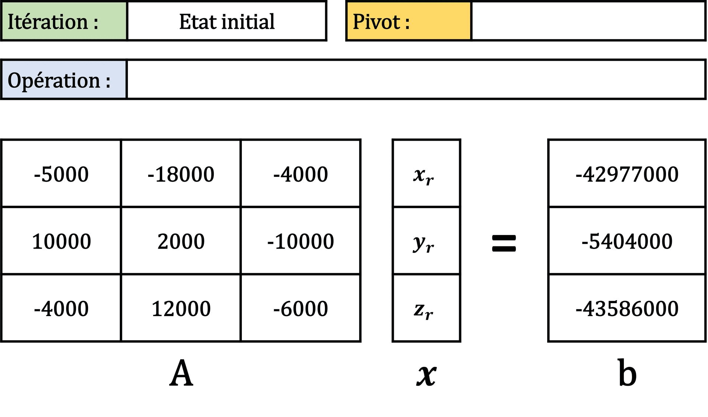
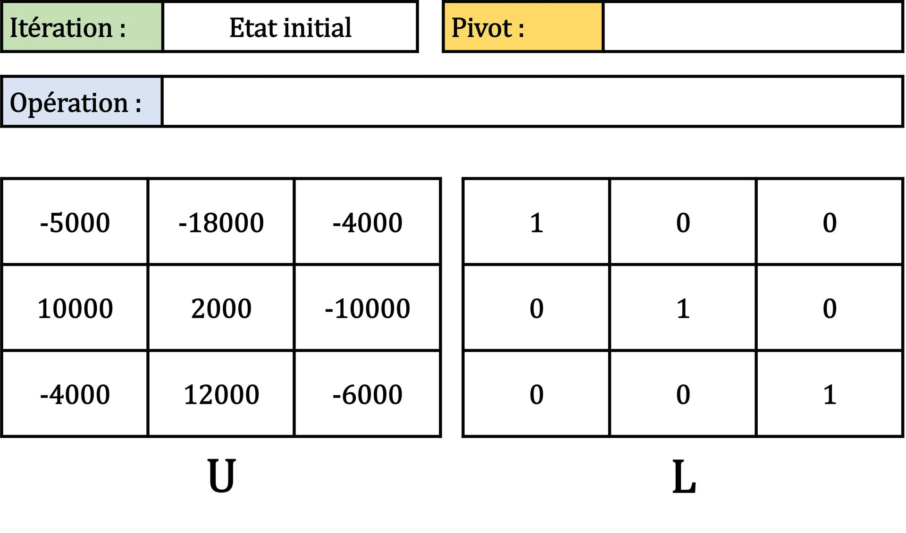
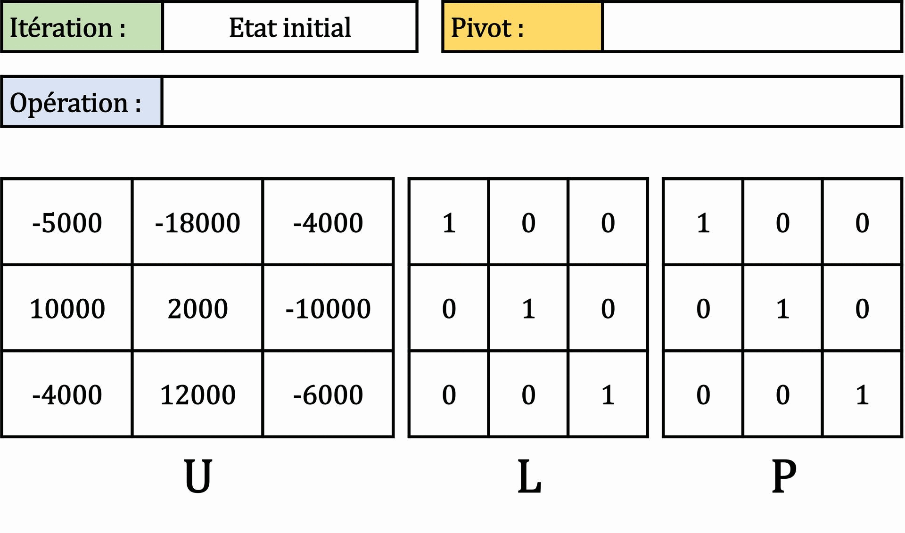
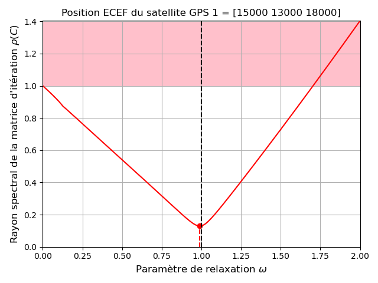
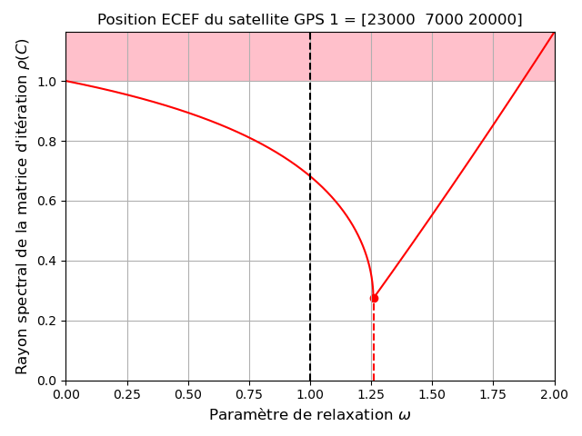

Chapitre V : Résolution de systèmes d'équations linéaires
Ce chapitre porte sur les méthodes numériques pour la résolution d'un système linéaire d'équations.
Position du problème
Motivation
Notre but est de résoudre un système linéaire : un ensemble d'équations portant sur les mêmes inconnues.
Un système de \(m\) équations linéaires à \(n\) inconnues peut s'écrire sous la forme suivante :
\(\begin{cases} a_{1,1} x_1 + a_{1,2} x_2 + ... + a_{1,n} x_n = b_1\\ a_{2,1} x_1 + a_{2,2} x_2 + ... + a_{2,n} x_n = b_2\\ ...\\ a_{m,1} x_1 + a_{m,2} x_2 + ... + a_{m,n} x_n = b_m \end{cases}\)
avec \(x_1,x_2,...,x_n\) les inconnues et \(a_{i,j}\) les coefficients du système.
On peut également écrire ce système sous forme matricielle :
\(A x = b\)
avec \(A\) une matrice de coefficients réels de taille \(m \times n\), \(x\) est un vecteur de taille \(n\) contenant les variables réelles recherchées, et \(b\) est un vecteur contenant \(m\) réels.
\(A = \begin{pmatrix} a_{1,1} & a_{1,2} & \cdots & a_{1,n} \\ a_{2,1} & a_{2,2} & \cdots & a_{2,n} \\ \vdots & \vdots & \ddots & \vdots \\ a_{m,1} & a_{m,2} &\cdots & a_{m,n} \end{pmatrix}\)
\(x = \begin{pmatrix} x_1\\ x_2\\ \vdots\\ x_n \end{pmatrix}\)
\(b = \begin{pmatrix} b_1\\ b_2\\ \vdots\\ b_n \end{pmatrix}\)
Si \(m>n\), on dit le système sur-déterminé. Si \(m<n\), on dit le système sous-déterminé.
Solution, rang et déterminant
Face à un système linéaire, il y a 3 cas possibles :
- Le système n'a pas de solution.
- Le système a une infinité de solution.
- Le système a une solution unique.
On peut savoir dans quel cas on se trouve avec le rang de la matrice \(A\).
| Définition |
|---|
| Le rang d'une matrice \(A\) est son nombre de vecteurs lignes ou colonnes linéairement indépendants. |
Si \(A\) est de dimensions \(m \times n\), alors \(rang(A) \leq min(m,n)\).
| Théorème de Rouché-Fontené |
|---|
| Le système linéaire \(A x = b\) avec |
| \(A\) une matrice de taille \(m \times n\), |
| \(x\) un vecteur de taille \(n\), |
| et \(b\) un vecteur de taille \(m\), |
| admet une solution si et seulement si : |
| \(rang(A) = rang([A \mid b])\) |
| Si de plus, \(rang(A) = n\), alors le système admet une unique solution. |
| Sinon, le système admet une infinité de solutions. |
Dans le cas où la matrice \(A\) est carrée, on a même le théorème suivant :
| Théorème |
|---|
| Lorsque la matrice \(A\) est carrée de dimension \(n \times n\), |
| avec \(n\) la taille du vecteur \(x\), |
| le système linéaire \(A x = b\) admet une unique solution si et seulement si : |
| le déterminant de \(A\) noté \(det(A)\) est non nul. |
| (\(A\) est alors inversible, et on note \(A^{-1}\) son inverse) |
On dit alors que le système est de Cramer et on peut écrire :
\(x = A^{-1} b\)
Le système homogène \(A x = 0\) admet toujours le vecteur nul comme solution :
-
Si \(det(A) \neq 0\) c'est l'unique solution.
-
Sinon il y en a une infinité.
Dans le cas d'un système non homogène (\(b \neq 0\)), si \(det(A) = 0\) :
-
Soit \(rang(A) = rang([A \mid b])\) alors il y a une infinité de solutions.
-
Soit \(rang(A) \neq rang([A \mid b])\) alors il n'y a pas de solution.
Conditionnement
Même quand un système linéaire admet une solution unique, cette solution peut ne pas être "stable".
Un système est dit "mal conditionné" si la solution est extrêmement sensible aux perturbations des coefficients \(A + \Delta A\) et des seconds membres \(b + \Delta b\).
Un déterminant petit est souvent indicateur d'un mauvais conditionnement.
Pour quantifier la sensibilité de l'erreur relative sur la solution du système linéaire \(A x = b\) aux variation de \(A\) et \(b\), on peut estimer le conditionnement de la matrice A :
\(\kappa(A) = \|A\| \|A^{-1}\|\)
avec une norme matricielle à définir.
L'erreur relative sur la solution est inférieure à l'erreur relative sur les données multiplisée par \(\kappa(A)\) :
-
Si \(\kappa(A)\) est petit (de l'ordre de l'unité) on dit que le conditionnement est bon.
-
Si \(\kappa(A) >> 1\) le système est dit mal conditionné.
Le calcul du conditionnement dépend du choix de la norme :
-
La norme infinie : \(\|A\|_{\infty} = max_{1 \leq i \leq n} \displaystyle\sum_{j=1}^{n} |a_{i,j}|\)
-
La norme 1 : \(\|A\|_1 = max_{1 \leq j \leq n} \displaystyle\sum_{i=1}^{n} |a_{i,j}|\)
-
La norme 2 : \(\|A\|_2 = \|A^T\|_2 = \sqrt{\rho(A A^T)} = \sqrt{\rho(A^T A)}\)
\(\rho(A)\) est le rayon spectral de \(A\), que l'on définit comme : \(\rho(A) = max_{1 \leq i \leq n} |\lambda_i|\) avec \(\lambda_i\) les valeurs propres de \(A\).
On utilisera surtout le conditionnement de \(A\) au sens de la norme 1 et de la norme 2 :
\(\kappa_1(A) = \|A\|_1 \|A^{-1}\|_1\)
\(\kappa_2(A) = \|A\|_2 \|A^{-1}\|_2\)
Pour une matrice carrée \(A\) d'ordre \(n\) inversible, le conditionnement vérifie les propriétés suivantes :
-
\(\kappa(A) \geq 1\)
-
\(\forall \alpha \in \mathbb{R}\), \(\kappa(\alpha A) = \kappa(A)\)
-
\(\kappa(A) = \kappa(A^{-1})\)
-
Si on note \(\sigma_{min}^2\) et \(\sigma_{max}^2\) la plus petite et la plus grande valeur propre de \(A A^T\) : \(\kappa_2(A) = \frac{\sigma_{max}}{\sigma_{min}}\)
-
Si \(A\) est une matrice réelle symétrique (\(A = A^T\)), si \(\lambda_{min}\) et \(\lambda_{max}\) sont la plus petite et la plus grande valeur propre de \(A\) en valeur absolue, on a : \(\kappa_2(A) = \mid \frac{\lambda_{max}}{\lambda_{min}} \mid\)
-
Si \(A\) est une matrice orthogonale (\(A A^T = A^T A = I\)) alors \(\kappa_2(A) = 1\)
| Effet d'une perturbation de \(b\) |
|---|
| Si on a une perturbation \(\Delta b\) sur \(b\) induisant une erreur \(\Delta x\) sur \(x\), alors on aura la majoration : |
| \(\frac{\Vert \Delta x \Vert}{\Vert x \Vert} \leq \kappa(A) \frac{\Vert \Delta b \Vert}{\Vert b \Vert}\) |
| Effet d'une perturbation de \(A\) |
|---|
| Si on a une perturbation \(\Delta A\) sur \(A\) induisant une erreur \(\Delta x\) sur \(x\), alors on aura la majoration : |
| \(\frac{\Vert \Delta x \Vert}{\Vert x + \Delta x \Vert} \leq \kappa(A) \frac{\Vert \Delta A \Vert}{\Vert A \Vert}\) |
Exemple de problème
Au cours de ce chapitre, nous appliquerons les différentes méthodes d'intégration à un même exemple : Le positionnement par satellites GPS.
Nous exprimerons ici les positions en km, avec des coordonnées dans le repère cartésien ECEF (Earth-Centered Earth-Fixed), ayant pour origine le centre de la Terre.
-
Soit un récepteur au sol dont on veut connaitre la position \((x_r,y_r,z_r)\) dans ce repère cartésien.
-
Soient 4 satellites de la constellation GPS, dont la position est connue dans ce même repère : \((x_{s1},y_{s1},z_{s1})\), \((x_{s2},y_{s2},z_{s2})\), \((x_{s3},y_{s3},z_{s3})\) and \((x_{s4},y_{s4},z_{s4})\).
-
Chaque satellite émet un signal, qui est reçu avec un certain temps de retard par le récepteur. Ces temps de retard \((t_1,t_2,t_3,t_4)\) sont mesurés par le récepteur.
-
On admet que les signaux émis par chaque satellite se déplacent à vitesse constante jusqu'au récepteur : \(c = 3.10^5 km/s\).
La distance euclidienne entre chaque satellite et le récepteur doit être égale au temps de retard du signal multiplié par sa vitesse. On en déduit facilement que les différentes variables sont liées par le système de 4 équations suivant :
\(\begin{cases} (x_r-x_{s1})^2 + (y_r-y_{s1})^2 + (z_r-z_{s1})^2 = (c t_1)^2\\ (x_r-x_{s2})^2 + (y_r-y_{s2})^2 + (z_r-z_{s2})^2 = (c t_2)^2\\ (x_r-x_{s3})^2 + (y_r-y_{s3})^2 + (z_r-z_{s3})^2 = (c t_3)^2\\ (x_r-x_{s4})^2 + (y_r-y_{s4})^2 + (z_r-z_{s4})^2 = (c t_4)^2 \end{cases}\)
Que l'on peut développer :
\(\begin{cases} x_r^2 - 2 x_{s1} x_r + x_{s1}^2 + y_r^2 - 2 y_{s1} y_r + y_{s1}^2 + z_r^2 - 2 z_{s1} z_r + z_{s1}^2 = (c t_1)^2\\ x_r^2 - 2 x_{s2} x_r + x_{s2}^2 + y_r^2 - 2 y_{s2} y_r + y_{s2}^2 + z_r^2 - 2 z_{s2} z_r + z_{s2}^2 = (c t_2)^2\\ x_r^2 - 2 x_{s3} x_r + x_{s3}^2 + y_r^2 - 2 y_{s3} y_r + y_{s3}^2 + z_r^2 - 2 z_{s3} z_r + z_{s3}^2 = (c t_3)^2\\ x_r^2 - 2 x_{s4} x_r + x_{s4}^2 + y_r^2 - 2 y_{s4} y_r + y_{s4}^2 + z_r^2 - 2 z_{s4} z_r + z_{s4}^2 = (c t_4)^2 \end{cases}\)
En soustrayant la 1ère équation aux 3 autres, on réduit le système à 3 équations :
\(\begin{cases} x_{s2}^2 + y_{s2}^2 + z_{s2}^2 - 2 x_{s2} x_r - 2 y_{s2} y_r - 2 z_{s2} z_r - x_{s1}^2 - y_{s1}^2 - z_{s1}^2 + 2 x_{s1} x_r + 2 y_{s1} y_r + 2 z_{s1} z_r = (c t_2)^2-(c t_1)^2\\ x_{s3}^2 + y_{s3}^2 + z_{s3}^2 - 2 x_{s3} x_r - 2 y_{s3} y_r - 2 z_{s3} z_r - x_{s1}^2 - y_{s1}^2 - z_{s1}^2 + 2 x_{s1} x_r + 2 y_{s1} y_r + 2 z_{s1} z_r = (c t_3)^2-(c t_1)^2\\ x_{s4}^2 + y_{s4}^2 + z_{s4}^2 - 2 x_{s4} x_r - 2 y_{s4} y_r - 2 z_{s4} z_r - x_{s1}^2 - y_{s1}^2 - z_{s1}^2 + 2 x_{s1} x_r + 2 y_{s1} y_r + 2 z_{s1} z_r = (c t_4)^2-(c t_1)^2 \end{cases}\)
Qui revient en regroupant les termes :
\(\begin{cases} x_{s2}^2 - x_{s1}^2 + y_{s2}^2 - y_{s1}^2 + z_{s2}^2 - z_{s1}^2 - 2 (x_{s2}-x_{s1}) x_r - 2 (y_{s2}-y_{s1}) y_r - 2 (z_{s2}-z_{s1}) z_r = (c t_2)^2-(c t_1)^2\\ x_{s3}^2 - x_{s1}^2 + y_{s3}^2 - y_{s1}^2 + z_{s3}^2 - z_{s1}^2 - 2 (x_{s3}-x_{s1}) x_r - 2 (y_{s3}-y_{s1}) y_r - 2 (z_{s3}-z_{s1}) z_r = (c t_3)^2-(c t_1)^2\\ x_{s4}^2 - x_{s1}^2 + y_{s4}^2 - y_{s1}^2 + z_{s4}^2 - z_{s1}^2 - 2 (x_{s4}-x_{s1}) x_r - 2 (y_{s4}-y_{s1}) y_r - 2 (z_{s4}-z_{s1}) z_r = (c t_4)^2-(c t_1)^2 \end{cases}\)
Et en réarrangeant on obtient finalement le système linéaire :
\(\begin{cases} (x_{s2}-x_{s1}) x_r + (y_{s2}-y_{s1}) y_r + (z_{s2}-z_{s1}) z_r = \frac{1}{2} (x_{s2}^2 - x_{s1}^2 + y_{s2}^2 - y_{s1}^2 + z_{s2}^2 - z_{s1}^2 - (c t_2)^2 + (c t_1)^2)\\ (x_{s3}-x_{s1}) x_r + (y_{s3}-y_{s1}) y_r + (z_{s3}-z_{s1}) z_r = \frac{1}{2} (x_{s3}^2 - x_{s1}^2 + y_{s3}^2 - y_{s1}^2 + z_{s3}^2 - z_{s1}^2 - (c t_3)^2 + (c t_1)^2)\\ (x_{s4}-x_{s1}) x_r + (y_{s4}-y_{s1}) y_r + (z_{s4}-z_{s1}) z_r = \frac{1}{2} (x_{s4}^2 - x_{s1}^2 + y_{s4}^2 - y_{s1}^2 + z_{s4}^2 - z_{s1}^2 - (c t_4)^2 + (c t_1)^2) \end{cases}\)
avec 3 équations et 3 inconnues \((x_r,y_r,z_r)\).
On peut écrire ce système sous la forme matricielle \(A x = b\) :
\(\begin{pmatrix} x_{s2}-x_{s1} & y_{s2}-y_{s1} & z_{s2}-z_{s1} \\ x_{s3}-x_{s1} & y_{s3}-y_{s1} & z_{s3}-z_{s1} \\ x_{s4}-x_{s1} & y_{s4}-y_{s1} & z_{s4}-z_{s1} \end{pmatrix} \begin{pmatrix} x_r\\ y_r\\ z_r \end{pmatrix} = \begin{pmatrix} \frac{1}{2} (x_{s2}^2 - x_{s1}^2 + y_{s2}^2 - y_{s1}^2 + z_{s2}^2 - z_{s1}^2 - (c t_2)^2 + (c t_1)^2)\\ \frac{1}{2} (x_{s3}^2 - x_{s1}^2 + y_{s3}^2 - y_{s1}^2 + z_{s3}^2 - z_{s1}^2 - (c t_3)^2 + (c t_1)^2)\\ \frac{1}{2} (x_{s4}^2 - x_{s1}^2 + y_{s4}^2 - y_{s1}^2 + z_{s4}^2 - z_{s1}^2 - (c t_4)^2 + (c t_1)^2) \end{pmatrix}\)
Admettons que le récepteur GPS se trouve aux coordonnées ECEF \((x_r,y_r,z_r) = (4205,158,4777)\), correspondant approximativement à la position de l'UFR des Sciences de l'UVSQ.
Si la position des 4 satellites est :
-
\((x_{s1},y_{s1},z_{s1}) = (14000,4000,25000)\)
-
\((x_{s2},y_{s2},z_{s2}) = (9000,-14000,21000)\)
-
\((x_{s3},y_{s3},z_{s3}) = (24000,6000,15000)\)
-
\((x_{s4},y_{s4},z_{s4}) = (10000,16000,19000)\)
Alors le temps de retard associé à chaque satellite sera approximativement :
-
\(t_1 = 0.0759878 s\)
-
\(t_2 = 0.0735321 s\)
-
\(t_3 = 0.0767739 s\)
-
\(t_4 = 0.0735485 s\)
(Il est à noter que les positions des satellites ont été choisies pour être réalistes des satellites GPS).
Le système devient alors :
\(\begin{pmatrix} -5000 & -18000 & -4000 \\ 10000 & 2000 & -10000 \\ -4000 & 12000 & -6000 \end{pmatrix} \begin{pmatrix} x_r\\ y_r\\ z_r \end{pmatrix} = \begin{pmatrix} -42977000\\ -5404000\\ -43586000 \end{pmatrix}\)
C'est ce système d'équations linéaires que nous chercherons à résoudre pour essayer de retrouver la position \((x_r,y_r,z_r)\) du récepteur.
On peut déjà vérifier que ce système a bien une unique racine :
-
\(A\) est carrée de dimensions \(3 \times 3\), \(x\) et \(b\) sont de taille 3.
-
\(det(A) = (-5000 \times 2000 \times -6000) + (10000 \times 12000 \times -4000) + (-18000 \times -10000 \times -4000)\) \(- (-4000 \times 2000 \times -4000) - (-5000 \times 12000 \times -10000) - (10000 \times -18000 \times -6000)\) \(= -2852000000000 \neq 0\)
Il s'agit donc d'un système de Cramer : on a bien unicité de la solution.
On peut également vérifier si le système est bien conditionné :
-
\(\kappa_1(A) \approx 5.03\)
-
\(\kappa_2(A) \approx 2.36\)
Dans les 2 cas, le conditionnement est de l'ordre de l'unité : un a donc un bon conditionnement.
Dans la suite de ce chapitre, on utilisera Numpy sous Python pour définir / manipuler les matrices \(A\) et \(b\) :
import numpy as np
On définira le vecteur de la position du récepteur GPS à retrouver avec :
pos_rec = np.array([4205,158,4777],dtype=np.float64)
On définira ensuite les vecteurs de positions des satellites GPS avec :
pos_sat1 = np.array([14000,4000,25000],dtype=np.float64) #Coordonnées du satellite GPS 1
pos_sat2 = np.array([9000,-14000,21000],dtype=np.float64) #Coordonnées du satellite GPS 2
pos_sat3 = np.array([24000,6000,15000],dtype=np.float64) #Coordonnées du satellite GPS 3
pos_sat4 = np.array([10000,16000,19000],dtype=np.float64) #Coordonnées du satellite GPS 4
On pourra alors en déduire les temps de retard associés :
t1 = ((sum((pos_rec-pos_sat1)**2))**0.5)/3e5 #Temps de retard associé au satellite GPS 1
t2 = ((sum((pos_rec-pos_sat2)**2))**0.5)/3e5 #Temps de retard associé au satellite GPS 2
t3 = ((sum((pos_rec-pos_sat3)**2))**0.5)/3e5 #Temps de retard associé au satellite GPS 3
t4 = ((sum((pos_rec-pos_sat4)**2))**0.5)/3e5 #Temps de retard associé au satellite GPS 4
Et pour finir, on pourra définir les matrices \(A\) et \(b\) du système linéaire à résoudre :
A = np.vstack((pos_sat2-pos_sat1,pos_sat3-pos_sat1,pos_sat4-pos_sat1))
b_row1 = 0.5*(sum(pos_sat2**2)-sum(pos_sat1**2)-(3e5*t2)**2+(3e5*t1)**2)
b_row2 = 0.5*(sum(pos_sat3**2)-sum(pos_sat1**2)-(3e5*t3)**2+(3e5*t1)**2)
b_row3 = 0.5*(sum(pos_sat4**2)-sum(pos_sat1**2)-(3e5*t4)**2+(3e5*t1)**2)
b = np.array([b_row1,b_row2,b_row3])
La règle de Cramer
Théorème
La règle de Cramer (ou méthode de Cramer) est un théorème d'algèbre linéaire qui donne la solution d'un système de Cramer :
| Théorème de la règle de Cramer |
|---|
| Le système de Cramer \(A x = b\) avec |
| \(A\) matrice carrée de taille \(n \times n\) |
| \(x\) vecteur de taille \(n\) |
| \(b\) vecteur de taille \(n\) |
| admet une solution si et seulement si \(A\) est inversible. |
| Cette solution est donnée par : |
| \(x_i = \frac{det(A_i)}{det(A)}\) pour \(i=1,...,n\) |
| où \(A_i\) est la matrice carrée formée en remplaçant la i-ème colonne de \(A\) par le vecteur \(b\). |
Lorsque le système n'est pas de Cramer (donc si \(det(A)=0\)) :
-
Si le déterminant d'une des matrices \(A_i\) est nul alors le système n'a pas de solution.
-
La réciproque est fausse : il peut arriver qu'un système n'ait pas de solution alors que tous les \(det(A_i)\) sont non-nuls.
Cette méthode est très couteuse en nombre d'opérations et devient donc inapplicable à de grands systèmes (plus de 4 équations).
Algorithme (n=3)
Dans cette section, nous présenterons les algorithmes permettant d'appliquer la méthode de Cramer dans le cas d'une matrice de dimensions \((3 \times 3)\) : 3 équations et 3 inconnues.
Le déterminant d'une matrice de dimensions \(3 \times 3\) peut être calculé à l'aide de la fonction Python suivante.
Cette fonction prend en entrée :
Ala matrice de dimensions \(3 \times 3\) dont on veut trouver le déterminant.
Elle se base simplement sur la formule du déterminant d'une matrice \(3 \times 3\).
def det_3(A):
return A[0,0]*A[1,1]*A[2,2]+A[0,1]*A[1,2]*A[2,0]+A[0,2]*A[1,0]*A[2,1]-A[0,2]*A[1,1]*A[2,0]-A[0,1]*A[1,0]*A[2,2]-A[0,0]*A[1,2]*A[2,1]
Voici l'algorithme de Cramer pour une matrice de dimensions \(3 \times 3\) sous la forme d'une fonction Python.
Cette fonction prend en entrée :
-
Ala matrice de dimensions \(3 \times 3\) des coefficients du système. -
ble vecteur de dimension 3 du second membre du système.
def cramer_3(A,b):
#Vérification des dimensions de A (3x3) et b (3) :
if (np.shape(A)!=(3,3))or(len(b)!=3):
raise ValueError("Le système n'est pas de Cramer")
#Calculer le déterminant de A :
det_A = det_3(A)
#Vérifier que le système admet bien une unique solution :
if det_A==0:
raise ValueError("Le système n'admet pas une solution unique !")
#Initialiser le vecteur qui contiendra les 3 solutions du système :
x = np.array([0,0,0],dtype=np.float64)
#Boucle sur les 3 colonnes de la matrice A :
for i in range(3):
#Remplir la matrice A_i avec les éléments de A :
A_i = np.copy(A)
#Remplacer la i-ème colonne de A_i avec les éléments de b :
A_i[:,i] = b
#Calculer la valeur de la i-ème inconnue du système :
x[i] = det_3(A_i)/det_A
#Renvoyer le vecteur contenant les 3 solutions du système :
return x
Exemple
Avant d'appliquer la méthode Cramer à notre problème exemple, il convient de vérifier que celle-ci est bien applicable.
On rappelle que nous avons montré précédemment que nous avons ici affaire à un système de Cramer car :
-
\(A\) est carrée de dimensions \(3 \times 3\), \(x\) et \(b\) sont de taille 3.
-
\(det(A) = -2852000000000 \neq 0\)
La solution est par conséquent unique, et nous pouvons appliquer la méthode de Cramer.
Tout d'abord, nous construisons \(A_1\), \(A_2\) et \(A_3\) :
\(A_1 = \begin{pmatrix} -42977000 & -18000 & -4000 \\ -5404000 & 2000 & -10000 \\ -43586000 & 12000 & -6000 \end{pmatrix}\)
\(A_2 = \begin{pmatrix} -5000 & -42977000 & -4000 \\ 10000 & -5404000 & -10000 \\ -4000 & -43586000 & -6000 \end{pmatrix}\)
\(A_3 = \begin{pmatrix} -5000 & -18000 & -42977000 \\ 10000 & 2000 & -5404000 \\ -4000 & 12000 & -43586000 \end{pmatrix}\)
On peut alors calculer que :
\(det(A_1) = -11992660000000000\)
\(det(A_2) = -450616000000000\)
\(det(A_3) = -13624004000000000\)
On en déduit que :
\(x_r = \frac{det(A_1)}{det(A)} = \frac{-11992660000000000}{-2852000000000} = 4205\)
\(y_r = \frac{det(A_2)}{det(A)} = \frac{-450616000000000}{-2852000000000} = 158\)
\(z_r = \frac{det(A_3)}{det(A)} = \frac{-13624004000000000}{-2852000000000} = 4777\)
Exercice :
Introduisez une erreur de 10 km dans les valeurs de \(A\), et appliquez de nouveau la méthode de Cramer au système. Comment ces erreurs se répercutent-elles sur l'estimation de \((x_r,y_r,z_r)\) ? Ce résultat était-il attendu d'après le conditionnement de \(A\) ?
Méthodes directes d'élimination
Propriétés des systèmes linéaires
Les méthodes dites "d'élimination" pour la résolution de systèmes linéaires se basent sur 4 grandes propriétés de ces systèmes.
La solution d'un système linéaire \(A x = b\) reste inchangée lorsque l'on applique les opérations suivantes :
| Permutation de lignes |
|---|
| Permuter 2 lignes de \(A\) et les éléments correspondants de \(b\) revient à permuter 2 équations. |
| Permutation de colonnes |
|---|
| Permuter 2 colonnes de \(A\) et les éléments correspondants de \(x\) revient à permuter 2 inconnues. |
| Addition d'une ligne à une autre |
|---|
| Ajouter une ligne de \(A\) à une autre, et ajouter les éléments correspondants de \(b\), revient à additionner une équation à une autre. |
| Multiplication d'une ligne par un réel non nul |
|---|
| Multiplier une ligne de \(A\) et les éléments correspondants de \(b\) par un réel non nul revient à multipler une équation par ce réel. |
L'idée derrière les méthodes d'élimination est d'utiliser ces opération pour construire une matrice \(A^*\) modifiée, triangulaire ou diagonale, afin de se ramener à un système simple à résoudre.
Pivot de Gauss
Idée
L'algorithme du pivot de Gauss a pour but de transformer le système en un système triangulaire à l'aide d'opérations sur les lignes (et éventuellement sur les colonnes). Il s'agit donc d'une méthode de triangularisation.
Une fois la matrice triangularisée, le système à résoudre devient :
\(\begin{cases} a_{1,1}^* x_1 + a_{1,2}^* x_2 + ... + a_{1,n}^* x_n = b_1^*\\ a_{2,2}^* x_2 + a_{2,3}^* x_3 + ... + a_{2,n}^* x_n = b_2^*\\ ...\\ a_{n-1,n-1}^* x_{n-1} + a_{n-1,n}^* x_n = b_{n-1}^*\\ a_{n,n}^* x_n = b_n^* \end{cases}\)
où les \(a_{i,j}*\) sont les coefficients de la matrice modifiée \(A^*\), et les \(b_i^*\) les éléments du vecteur modifié \(b^*\).
Pour résoudre ce système, il suffit alors d'effectuer les calculs de "remontée" suivants :
\(\begin{cases} x_n = \frac{b_n^*}{a_{n,n}^*}\\ x_{n-1} = \frac{1}{a_{n-1,n-1}^*} (b_{n-1}^* - a_{n-1,n}^* x_n)\\ ...\\ x_i = \frac{1}{a_{i,i}^*} (b_i^* - \displaystyle\sum_{j=i+1}^{n} a_{i,j}^* x_j)\\ ...\\ x_1 = \frac{1}{a_{1,1}^*} (b_1^* - \displaystyle\sum_{j=2}^{n} a_{1,j}^* x_j) \end{cases}\)
Pour triangulariser la matrice \(A\), on répète ces opérations pour chaque colonne \(j\) :
| Opérations du pivot de Gauss |
|---|
| - On choisit une valeur non-nulle dans la colonne \(j\), d'indice supérieur ou égal à \(j\), que l'on appellera pivot. |
| - On ramène le pivot sur la ligne \(j\) en effectuant si nécessaire un changement de ligne. |
| - On effectue les opérations suivantes sur les lignes d'indice \(j < k \leq n\) : |
| \(L_k = L_k - \frac{a_{k,j}}{a_{jj}} L_j\) |
| On passe à la colonne suivante, jusqu'à l'avant-dernière. |
Pour réduire les erreurs liées aux arrondis, on peut adopter plusieurs stratégies pour le choix du pivot :
-
Sans pivotage : on ne réalise ni permutations de lignes, ni permutations de colonnes. Le pivot est toujours séléctionné sur la diagonale de la matrice.
-
Le pivot partiel : on choisi le pivot comme étant l'élément de valeur absolue maximale de la colonne sur ou sous la diagonale. Cette stratégie n'implique que des permutations de lignes.
-
Le pivot total : on choisi le pivot comme étant l'élément de valeur absolue maximale sur toute la portion de matrice non-triangularisée. Cette stratégie implique des permutations de lignes et de colonnes.
Choisir le pivot le plus grand possible assure que les coefficients de \(A\) et \(A^*\) soient de même magnitude relative, réduisant ainsi la propagation des erreurs d'arrondis.
L'algorithme du pivot partiel est le plus communément utilisé.
La triangularisation d'une matrice \(A\) de dimensions \(n \times n\) requiert de l'ordre de \(\frac{2 n^3}{3}\) opérations.
La remontée requiert de l'ordre de \(n^2\) opérations.
Algorithmes
Voici sous la forme de fonctions Python les algorithmes d'élimination de Gauss sans pivotage, avec pivot partiel et avec pivot total.
Toutes ces fonctions prennent en entrée un système de Cramer :
-
Ala matrice des coefficients du système. -
ble vecteur du second membre du système.
Voici l'algorithme d'élimination de Gauss sans pivotage :
def gauss_sans_pivot(A,b):
#Récupérer les dimensions de la matrice A :
m,n = np.shape(A)
#Vérification des dimensions de A (nxn) et b (n) :
if (m!=n)or(len(b)!=n):
raise ValueError("Le système n'est pas de Cramer")
#Copier A et b pour ne pas modifier les matrices originales :
A_2 = np.copy(A)
b_2 = np.copy(b)
#Boucle sur les colonnes de la matrice A, jusqu'à l'avant-dernière :
for j in range(n-1):
#Sélection du pivot comme étant la valeur sur la diagonale de la j-ème colonne :
pivot = A_2[j,j]
#On vérifie que le pivot n'est pas nul :
if pivot!=0:
#Boucle sur les lignes sous le pivot :
for k in range(j+1,n):
#Opérations sur les lignes de A et b en utilisant le pivot :
b_2[k] = b_2[k] - b_2[j]*A_2[k,j]/pivot
A_2[k,:] = A_2[k,:] - A_2[j,:]*A_2[k,j]/pivot
#Renvoyer les matrices A et b modifiées :
return A_2,b_2
Voici l'algorithme d'élimination de Gauss avec pivot partiel :
def gauss_pivot_partiel(A,b):
#Récupérer les dimensions de la matrice A :
m,n = np.shape(A)
#Vérification des dimensions de A (nxn) et b (n) :
if (m!=n)or(len(b)!=n):
raise ValueError("Le système n'est pas de Cramer")
#Copier A et b pour ne pas modifier les matrices originales :
A_2 = np.copy(A)
b_2 = np.copy(b)
#Boucle sur les colonnes de la matrice A, jusqu'à l'avant-dernière :
for j in range(n-1):
#Sélection du pivot comme étant la valeur maximale en absolu sur la colonne,
#sur la j-ième ligne ou en dessous :
idx_pivot = np.argmax(abs(A_2[j:,j]))+j #Indice de la ligne du pivot
pivot = A_2[idx_pivot,j] #Valeur du pivot
#On vérifie que le pivot n'est pas nul :
if pivot!=0:
#Si le pivot n'est pas sur la j-ième ligne, échanger la j-ième et la
#ligne du pivot :
if idx_pivot!=j:
A_2[[j,idx_pivot]] = A_2[[idx_pivot,j]] #Pour la matrice A
b_2[[j,idx_pivot]] = b_2[[idx_pivot,j]] #Pour le vecteur b
#Boucle sur les lignes sous le pivot :
for k in range(j+1,n):
#Opérations sur les lignes de A et b en utilisant le pivot :
b_2[k] = b_2[k] - b_2[j]*A_2[k,j]/pivot
A_2[k,:] = A_2[k,:] - A_2[j,:]*A_2[k,j]/pivot
#Renvoyer les matrices A et b modifiées :
return A_2,b_2
Voici l'algorithme d'élimination de Gauss avec pivot total :
def gauss_pivot_total(A,b):
#Récupérer les dimensions de la matrice A :
m,n = np.shape(A)
#Vérification des dimensions de A (nxn) et b (n) :
if (m!=n)or(len(b)!=n):
raise ValueError("Le système n'est pas de Cramer")
#Copier A et b pour ne pas modifier les matrices originales :
A_2 = np.copy(A)
b_2 = np.copy(b)
#Créer un vecteur contenant l'ordre des inconnues dans x (de 0 à n-1) :
idx_x = np.arange(n)
#Boucle sur les colonnes de la matrice A, jusqu'à l'avant-dernière :
for j in range(n-1):
#Sélection du pivot comme étant la valeur maximale en absolu sur la
#portion de matrice non-triangularisée :
idx_pivot = np.argmax(abs(A_2[j:,j:])) #Indice du pivot
ligne_pivot = idx_pivot//(n-j)+j
colonne_pivot = idx_pivot%(n-j)+j
pivot = A_2[ligne_pivot,colonne_pivot] #Valeur du pivot
#On vérifie que le pivot n'est pas nul :
if pivot!=0:
#Si le pivot n'est pas sur la j-ième ligne, échanger la j-ième et la
#ligne du pivot :
if ligne_pivot!=j:
A_2[[j,ligne_pivot]] = A_2[[ligne_pivot,j]] #Pour la matrice A
b_2[[j,ligne_pivot]] = b_2[[ligne_pivot,j]] #Pour le vecteur b
#Si le pivot n'est pas sur la j-ième colonne, échanger la j-ième et la
#colonne du pivot :
if colonne_pivot!=j:
A_2[:,[j,colonne_pivot]] = A_2[:,[colonne_pivot,j]] #Pour la matrice A
idx_x[[j,colonne_pivot]] = idx_x[[colonne_pivot,j]] #Pour les éléments de x
#Boucle sur les lignes sous le pivot :
for k in range(j+1,n):
#Opérations sur les lignes de A et b en utilisant le pivot :
b_2[k] = b_2[k] - b_2[j]*A_2[k,j]/pivot
A_2[k,:] = A_2[k,:] - A_2[j,:]*A_2[k,j]/pivot
#Déterminer les indices de x permettant d'obtenir les inconnues dans l'ordre :
ordre_x = np.argsort(idx_x)
#Renvoyer les matrices A et b modifiées, et l'ordre des inconnues :
return A_2,b_2,ordre_x
Une fois, le système triangularisé par une des méthodes d'élimination de Gauss, il faut lui appliquer l'algorithme de remontée pour le résoudre. Voici l'algorithme de remontée sous la forme d'une fonction Python :
def remontee(A,b):
#Récupérer le nombre n d'équations / inconnues du système :
n = len(A)
#Initialiser le vecteur qui contiendra les solutions du système :
x = np.zeros(n,dtype=np.float64)
#Boucle sur les lignes de la matrice A, de n à 1 :
for i in range(n-1,-1,-1):
#Détermination de la i-ème inconnue :
x[i] = (b[i]-sum(A[i,i+1:n]*x[i+1:n]))/A[i,i]
#Renvoyer le vecteur contenant les solutions du système :
return x
Dans le cas du pivot total, pour récupérer les inconnues dans l'ordre, il faudra utiliser le vecteur retourné par la fonction "gauss_pivot_total" :
A_2,b_2,ordre_x = gauss_pivot_total(A,b)
x_2 = remontee(A_2,b_2)
x_2 = x_2[ordre_x]
Exemple
Nous allons appliquer chacun des 3 algorithmes d'élimination de Gauss (sans pivotage, avec pivot partiel, avec pivot total) à notre problème exemple. On rappelle que nous avons initialement le système de Cramer \(A x = b\) suivant :
\(\begin{pmatrix} -5000 & -18000 & -4000 \\ 10000 & 2000 & -10000 \\ -4000 & 12000 & -6000 \end{pmatrix} \begin{pmatrix} x_r\\ y_r\\ z_r \end{pmatrix} = \begin{pmatrix} -42977000\\ -5404000\\ -43586000 \end{pmatrix}\)
Sans pivotage :
-
1ère itération : nous commençons par la colonne 1.
-
On sélectionne le pivot comme étant sur la diagonale : -5000.
-
On réalise les opérations suivantes :
\(L_2 = L_2 - L_1 \times \frac{10000}{-5000}\)
\(L_3 = L_3 - L_1 \times \frac{-4000}{-5000}\)
Le système devient alors :
\(\begin{pmatrix} -5000 & -18000 & -4000 \\ 0 & -34000 & -18000 \\ 0 & 26400 & -2800 \end{pmatrix} \begin{pmatrix} x_r\\ y_r\\ z_r \end{pmatrix} = \begin{pmatrix} -42977000\\ -91358000\\ -9204400 \end{pmatrix}\)
-
2nde itération : nous continuons avec la colonne 2.
-
On séléctionne le pivot comme étant sur la diagonale : -34000.
-
On réalise l'opération suivante :
\(L_3 = L_3 - L_2 \times \frac{26400}{-34000}\)
Le système devient alors :
\(\begin{pmatrix} -5000 & -18000 & -4000 \\ 0 & -34000 & -18000 \\ 0 & 0 & -16776.47 \end{pmatrix} \begin{pmatrix} x_r\\ y_r\\ z_r \end{pmatrix} = \begin{pmatrix} -42977000\\ -91358000\\ -80141200 \end{pmatrix}\)
On obtient bien un système triangulaire auquel on peut appliquer l'algorithme de remontée.
Voici un résumé des différentes étapes de l'algorithme sous la forme d'une animation :

On en déduit alors les solutions par l'algorithme de remontée :
\(\begin{cases} z_r = \frac{-80141200}{-16776.47} = 4777\\ y_r = \frac{1}{-34000} (-91358000 - (-18000 \times z_r)) = 158\\ x_r = \frac{1}{-5000} (-42977000 - (-18000 \times y_r) - (-4000 \times z_r)) = 4205 \end{cases}\)
Pivot partiel :
-
1ère itération : nous commençons par la colonne 1.
-
On sélectionne le pivot comme étant le maximum en valeur absolue sur la colonne, sur ou sous la diagonale : 10000.
-
On échange la ligne 1 et la ligne 2 pour faire passer le pivot sur la diagonale.
Le système devient alors :
\(\begin{pmatrix} 10000 & 2000 & -10000 \\ -5000 & -18000 & -4000 \\ -4000 & 12000 & -6000 \end{pmatrix} \begin{pmatrix} x_r\\ y_r\\ z_r \end{pmatrix} = \begin{pmatrix} -5404000\\ -42977000\\ -43586000 \end{pmatrix}\)
- On réalise les opérations suivantes :
\(L_2 = L_2 - L_1 \times \frac{-5000}{10000}\)
\(L_3 = L_3 - L_1 \times \frac{-4000}{10000}\)
Le système devient alors :
\(\begin{pmatrix} 10000 & 2000 & -10000 \\ 0 & -17000 & -9000 \\ 0 & 12800 & -10000 \end{pmatrix} \begin{pmatrix} x_r\\ y_r\\ z_r \end{pmatrix} = \begin{pmatrix} -5404000\\ -45679000\\ -45747600 \end{pmatrix}\)
-
2nde itération : nous continuons avec la colonne 2.
-
On sélectionne le pivot comme étant le maximum en valeur absolue sur la colonne, sur ou sous la diagonale : -17000.
-
On réalise l'opération suivante :
\(L_3 = L_3 - L_2 \times \frac{12800}{-17000}\)
Le système devient alors :
\(\begin{pmatrix} 10000 & 2000 & -10000 \\ 0 & -17000 & -9000 \\ 0 & 0 & -16776.47 \end{pmatrix} \begin{pmatrix} x_r\\ y_r\\ z_r \end{pmatrix} = \begin{pmatrix} -5404000\\ -45679000\\ -80141200 \end{pmatrix}\)
On obtient bien un système triangulaire auquel on peut appliquer l'algorithme de remontée.
Voici un résumé des différentes étapes de l'algorithme sous la forme d'une animation :
On en déduit alors les solutions par l'algorithme de remontée :
\(\begin{cases} z_r = \frac{-80141200}{-16776.47} = 4777\\ y_r = \frac{1}{-17000} (-45679000 - (-9000 \times z_r)) = 158\\ x_r = \frac{1}{10000} (-5404000 - (2000 \times y_r) - (-10000 \times z_r)) = 4205 \end{cases}\)
Pivot total :
-
1ère itération : nous commençons par la colonne 1.
-
On sélectionne le pivot comme étant le maximum en valeur absolue sur la portion de matrice non-triangularisée : -18000.
-
On échange la colonne 1 et la colonne 2 pour faire passer le pivot sur la diagonale.
Le système devient alors :
\(\begin{pmatrix} -18000 & -5000 & -4000 \\ 2000 & 10000 & -10000 \\ 12000 & -4000 & -6000 \end{pmatrix} \begin{pmatrix} y_r\\ x_r\\ z_r \end{pmatrix} = \begin{pmatrix} -42977000\\ -5404000\\ -43586000 \end{pmatrix}\)
- On réalise les opérations suivantes :
\(L_2 = L_2 - L_1 \times \frac{2000}{-18000}\)
\(L_3 = L_3 - L_1 \times \frac{12000}{-18000}\)
\(\begin{pmatrix} -18000 & -5000 & -4000 \\ 0 & 9444.44 & -10444.44 \\ 0 & -7333.33 & -8666.67 \end{pmatrix} \begin{pmatrix} y_r\\ x_r\\ z_r \end{pmatrix} = \begin{pmatrix} -42977000\\ -10179222.22\\ -72237333.33 \end{pmatrix}\)
-
2nde itération : nous continuons avec la colonne 2.
-
On sélectionne le pivot comme étant le maximum en valeur absolue sur la portion de matrice non-triangularisée : -10444.44.
-
On échange la colonne 2 et la colonne 3 pour faire passer le pivot sur la diagonale.
Le système devient alors :
\(\begin{pmatrix} -18000 & -4000 & -5000 \\ 0 & -10444.44 & 9444.44 \\ 0 & -8666.67 & -7333.33 \end{pmatrix} \begin{pmatrix} y_r\\ z_r\\ x_r \end{pmatrix} = \begin{pmatrix} -42977000\\ -10179222.22\\ -72237333.33 \end{pmatrix}\)
- On réalise l'opération suivante :
\(L_3 = L_3 - L_2 \times \frac{-8666.67}{-10444.44}\)
Le système devient alors :
\(\begin{pmatrix} -18000 & -4000 & -5000 \\ 0 & -10444.44 & 9444.44 \\ 0 & 0 & -15170.21 \end{pmatrix} \begin{pmatrix} y_r\\ z_r\\ x_r \end{pmatrix} = \begin{pmatrix} -42977000\\ -10179222.22\\ -63790744.68 \end{pmatrix}\)
On obtient bien un système triangulaire auquel on peut appliquer l'algorithme de remontée.
Voici un résumé des différentes étapes de l'algorithme sous la forme d'une animation :
On en déduit alors les solutions par l'algorithme de remontée :
\(\begin{cases} x_r = \frac{-63790744.68}{-15170.21} = 4205\\ z_r = \frac{1}{-10444.44} (-10179222.22 - (9444.44 \times x_r)) = 4777\\ y_r = \frac{1}{-18000} (-63790744.68 - (-4000 \times z_r) - (-5000 \times x_r)) = 158 \end{cases}\)
Exercice :
Pourquoi choisir le pivot le plus grand possible ?
Dans le cas de notre problème exemple, les coefficients de \(A\) sont tous du même ordre de grandeur, et nous n'avons pas de gros problèmes d'arrondis. Le résutat obtenu est donc le même pour les 3 méthodes d'élimination de Gauss (sans pivotage, avec pivot partiel, avec pivot total).
Essayez à la main d'appliquer au système suivant l'élimination de Gauss sans pivotage puis avec pivot partiel, pour 4 chiffres significatifs sur tous les calculs :
\(\begin{cases} 1.308 x_1 + 4.951 x_2 = 6.259\\ 27.05 x_1 + 1.020 x_2 = 28.07 \end{cases}\)
La solution de ce système est évidente : \(x_1 = 1.000\) et \(x_2 = 1.000\).
Retrouvez-vous ce résultat avec la méthode sans pivotage ? Avec pivot partiel ? Quelle est la cause de cette différence ?
Elimination de Gauss-Jordan
Idée
L'algorithme de Gauss-Jordan a pour but de transformer le système en un système échelonné réduit à l'aide d'opérations élémentaires sur les lignes (et éventuellement sur les colonnes). L'idée est de pousser plus loin les éliminations que la méthode de Gauss, pour construire une matrice \(A^*\) de la forme :
\(\begin{pmatrix} 1 & * & 0 & 0 & * & 0\\ 0 & 0 & 1 & 0 & * & 0\\ 0 & 0 & 0 & 1 & * & 0\\ 0 & 0 & 0 & 0 & 0 & 1\\ 0 & 0 & 0 & 0 & 0 & 0\\ \end{pmatrix}\)
Il faut donc ajouter à l'élimination de Gauss vue précédemment :
-
Une division de la ligne du pivot par le pivot, pour que le pivot soit égal à 1.
-
Des opérations sur les lignes au-dessus de la ligne du pivot.
Il s'agit d'une méthode de diagonalisation.
Si la matrice \(A\) est carrée inversible de taille \(n \times n\), sa forme échelonnée réduite est la matrice identité de taille \(n \times n\).
Le nombre d'opérations de l'algorithme de Gauss-Jordan est de l'ordre de \(n^3\) au lieu de \(\frac{2}{3} n^3\) pour l'élimination de Gauss. Mais avec l'élimination de Gauss-Jordan, la résolution du système est immédiate : la solution est directement \(x = b^*\).
Algorithme
Comme pour l'élimination de Gauss, l'élimination de Gauss-Jordan peut se décliner sous 3 formes suivant la stratégie choix du pivot : sans pivotage, avec pivot partiel, avec pivot total.
Nous donnerons ici l'algorithme de l'élimination de Gauss-Jordan avec pivot partiel, qui est le plus communément utilisé.
Le voici sous la forme d'une fonction Python, qui prend en entrée un système de Cramer :
-
Ala matrice des coefficients du système. -
ble vecteur du second membre du système.
def gauss_jordan(A,b):
#Récupérer les dimensions de la matrice A :
m,n = np.shape(A)
#Vérification des dimensions de A (nxn) et b (n) :
if (m!=n)or(len(b)!=n):
raise ValueError("Le système n'est pas de Cramer")
#Copier A et b pour ne pas modifier les matrices originales :
A_2 = np.copy(A)
b_2 = np.copy(b)
#Boucle sur les colonnes de la matrice A :
for j in range(n):
#Sélection du pivot comme étant la valeur maximale en absolu sur la colonne,
#sur la j-ième ligne ou en dessous :
idx_pivot = np.argmax(abs(A_2[j:,j]))+j #Indice de la ligne du pivot
pivot = A_2[idx_pivot,j] #Valeur du pivot
#On vérifie que le pivot n'est pas nul :
if pivot!=0:
#Division de la ligne du pivot par le pivot, pour que le pivot soit égal à 1 :
A_2[idx_pivot,:] = A_2[idx_pivot,:]/pivot #Pour la matrice A
b_2[idx_pivot] = b_2[idx_pivot]/pivot #Pour le vecteur b
#Si le pivot n'est pas sur la j-ième ligne, échanger la j-ième et la
#ligne du pivot :
if idx_pivot!=j:
A_2[[j,idx_pivot]] = A_2[[idx_pivot,j]] #Pour la matrice A
b_2[[j,idx_pivot]] = b_2[[idx_pivot,j]] #Pour le vecteur b
#Boucle sur toutes les lignes sauf celle du pivot :
for k in range(n):
if k!=j:
#Opérations sur les lignes de A et b :
b_2[k] = b_2[k] - b_2[j]*A_2[k,j]
A_2[k,:] = A_2[k,:] - A_2[j,:]*A_2[k,j]
#Renvoyer les matrices A et b modifiées :
return A_2,b_2
Il n'y a pas besoin d'un algorithme de remontée ici, puisque les solutions seront directement les valeurs du vecteur "b_2" en sortie.
Exemple
Nous allons appliquer l'algorithme d'élimination de Gauss-Jordan (avec pivot partiel) à notre problème exemple. On rappelle que nous avons initialement le système de Cramer \(A x = b\) suivant :
\(\begin{pmatrix} -5000 & -18000 & -4000 \\ 10000 & 2000 & -10000 \\ -4000 & 12000 & -6000 \end{pmatrix} \begin{pmatrix} x_r\\ y_r\\ z_r \end{pmatrix} = \begin{pmatrix} -42977000\\ -5404000\\ -43586000 \end{pmatrix}\)
-
1ère itération : nous commençons par la colonne 1.
-
On sélectionne le pivot comme étant le maximum en valeur absolue sur la colonne, sur ou sous la diagonale : 10000.
-
On divise la ligne du pivot par le pivot : \(L_2 = \frac{L_2}{10000}\)
Le système devient alors :
\(\begin{pmatrix} -5000 & -18000 & -4000 \\ 1 & 0.2 & -1 \\ -4000 & 12000 & -6000 \end{pmatrix} \begin{pmatrix} x_r\\ y_r\\ z_r \end{pmatrix} = \begin{pmatrix} -42977000\\ -540.4\\ -43586000 \end{pmatrix}\)
- On échange la ligne 1 et la ligne 2 pour faire passer le pivot sur la diagonale.
Le système devient alors :
\(\begin{pmatrix} 1 & 0.2 & -1 \\ -5000 & -18000 & -4000 \\ -4000 & 12000 & -6000 \end{pmatrix} \begin{pmatrix} x_r\\ y_r\\ z_r \end{pmatrix} = \begin{pmatrix} -540.4\\ -42977000\\ -43586000 \end{pmatrix}\)
- On réalise les opérations suivantes :
\(L_2 = L_2 - L_1 \times -5000\)
\(L_3 = L_3 - L_1 \times -4000\)
Le système devient alors :
\(\begin{pmatrix} 1 & 0.2 & -1 \\ 0 & -17000 & -9000 \\ 0 & 12800 & -10000 \end{pmatrix} \begin{pmatrix} x_r\\ y_r\\ z_r \end{pmatrix} = \begin{pmatrix} -540.4\\ -45679000\\ -45747600 \end{pmatrix}\)
-
2nde itération : nous continuons avec la colonne 2.
-
On sélectionne le pivot comme étant le maximum en valeur absolue sur la colonne, sur ou sous la diagonale : -17000.
-
On divise la ligne du pivot par le pivot : \(L_2 = \frac{L_2}{-17000}\)
Le système devient alors :
\(\begin{pmatrix} 1 & 0.2 & -1 \\ 0 & 1 & 0.5294 \\ 0 & 12800 & -10000 \end{pmatrix} \begin{pmatrix} x_r\\ y_r\\ z_r \end{pmatrix} = \begin{pmatrix} -540.4\\ 2687\\ -45747600 \end{pmatrix}\)
- On réalise les opérations suivantes :
\(L_1 = L_1 - L_2 \times 0.2\)
\(L_3 = L_3 - L_2 \times 12800\)
Le système devient alors :
\(\begin{pmatrix} 1 & 0 & -1.1059 \\ 0 & 1 & 0.5294 \\ 0 & 0 & -16776.47 \end{pmatrix} \begin{pmatrix} x_r\\ y_r\\ z_r \end{pmatrix} = \begin{pmatrix} -1077.8\\ 2687\\ -80141200 \end{pmatrix}\)
-
3ème itération : nous continuons avec la colonne 3.
-
On sélectionne le pivot comme étant le maximum en valeur absolue sur la colonne, sur ou sous la diagonale : -16776.47.
-
On divise la ligne du pivot par le pivot : \(L_3 = \frac{L_3}{-16776.47}\)
Le système devient alors :
\(\begin{pmatrix} 1 & 0 & -1.1059 \\ 0 & 1 & 0.5294 \\ 0 & 0 & 1 \end{pmatrix} \begin{pmatrix} x_r\\ y_r\\ z_r \end{pmatrix} = \begin{pmatrix} -1077.8\\ 2687\\ 4777 \end{pmatrix}\)
- On réalise les opérations suivantes :
\(L_1 = L_1 - L_3 \times -1.1059\)
\(L_2 = L_2 - L_3 \times 0.5294\)
Le système devient alors :
\(\begin{pmatrix} 1 & 0 & 0 \\ 0 & 1 & 0 \\ 0 & 0 & 1 \end{pmatrix} \begin{pmatrix} x_r\\ y_r\\ z_r \end{pmatrix} = \begin{pmatrix} 4205\\ 158\\ 4777 \end{pmatrix}\)
- On trouve alors directement la solution du système :
\(x = \begin{pmatrix} 4205\\ 158\\ 4777 \end{pmatrix}\)
Voici un résumé des différentes étapes de l'algorithme sous la forme d'une animation :
Exercice :
En vous inspirant des fonctions Python précédentes, implémentez la méthode de Gauss-Jordan avec pivot total, puis appliquez-la à notre problème exemple. Vérifiez que vous retrouvez bien le résultat attendu.
Méthodes directes de factorisation / décomposition
Equivalence élimination - factorisation
- Les opérations d'élimination :
On remarque qu'appliquer l'opération \(L_2 = L_2 - \frac{a_{2,1}}{a_{1,1}} L_1\) à un système \(A x = b\) de dimensions \(n \times n\) revient à multiplier \(A\) et \(b\) par la matrice :
\(M = \begin{pmatrix} 1 & 0 & 0 \\ -a_{2,1}/a_{1,1} & 1 & 0 \\ 0 & 0 & 1 \end{pmatrix}\)
Si on notre \(A^{(k)}\) et \(b^{(k)}\) les matrices avant l'opération, et \(A^{(k+1)}\) et \(b^{(k+1)}\) les matrices après l'opération, on a :
\(A^{(k+1)} = M A^{(k)}\) et \(b^{(k+1)} = M b^{(k)}\)
- Les permutations :
On remarque que permutter les lignes \(L_2\) et \(L_3\) d'un système \(A x = b\) de dimension \(n \times n\) revient à multiplier \(A\) et \(b\) par la matrice :
\(P = \begin{pmatrix} 1 & 0 & 0 \\ 0 & 0 & 1 \\ 0 & 1 & 0 \end{pmatrix}\)
Si on notre \(A^{(k)}\) et \(b^{(k)}\) les matrices avant l'opération, et \(A^{(k+1)}\) et \(b^{(k+1)}\) les matrices après l'opération, on a :
\(A^{(k+1)} = P A^{(k)}\) et \(b^{(k+1)} = P b^{(k)}\)
| Equivalence |
|---|
| Les algorithmes d'élimination de Gauss peuvent donc s'écrire comme une succession de multiplications par : |
| - Des matrices triangulaires \(M\). |
| - Des matrices de permutation \(P\). |
- La représentation matricelle de l'élimation de Gauss :
On peut voir l'algorithme de l'élimination de Gauss comme la transformation d'un système \(A x = b\) en un système \(U x = c\) avec \(U\) une matrice triangulaire supérieure.
On a vu qu'à chaque étape \(k\), les opérations de l'algorithme sont équivalentes à multiplier \(A^{(k)}\) et \(b^{(k)}\) par une matrice du type :
\(M_k = \begin{pmatrix} 1 & 0 & 0 & 0 & \cdots & 0 & 0\\ 0 & 1 & 0 & 0 & \cdots & 0 & 0\\ 0 & 0 & 1 & 0 & \cdots & 0 & 0\\ 0 & 0 & m_{k+1,k} & 0 & \cdots & 0 & 0\\ \vdots & \vdots & \vdots & \vdots & \vdots & \vdots & \vdots\\ 0 & 0 & m_{n,k} & 0 & \cdots & 0 & 1 \end{pmatrix}\)
avec les \(m_{i,k} = - \frac{a_{i,k}}{a_{k,k}}\) pour \(i>k\).
A la 1ère étape on a \(A^{(1)}=A\), et à la dernière étape on a \(A^{(n)}=U\).
On en déduit que l'on peut exprimer \(U\) comme :
\(U = A^{(n)} = M_{n-1} A^{(n-1)} = M_{n-1} M_{n-2} A^{(n-2)} = ... = M_{n-1} M_{n-2} ... M_1 A^{(1)} = M A\)
en notant \(M = M_{n-1} M_{n-2} ... M_1\)
Si on pose \(L = M^{-1}\), alors on peut écrire \(A = L U\) avec \(L\) et \(U\) des matrices triangulaires inférieure (L) et supérieure (U).
Les matrices \(M_k\) sont inversibles, et leurs inverses sont les matrices triangulaires inférieures :
\(L_k = \begin{pmatrix} 1 & 0 & 0 & 0 & \cdots & 0 & 0\\ 0 & 1 & 0 & 0 & \cdots & 0 & 0\\ 0 & 0 & 1 & 0 & \cdots & 0 & 0\\ 0 & 0 & -m_{k+1,k} & 0 & \cdots & 0 & 0\\ \vdots & \vdots & \vdots & \vdots & \vdots & \vdots & \vdots\\ 0 & 0 & -m_{n,k} & 0 & \cdots & 0 & 1 \end{pmatrix}\)
Il en résulte que \(L = M^{-1} = L_{n-1} L_{n-2} ... L_1\).
Dans le cadre des stratégies avec pivot partiel ou total, on ajoute les permutations : \(A = P L U\).
D'où les décompositions "LU" et "PLU" présentées dans la section suivante.
Décomposition LU et PLU
Idée
Décomposition LU :
On appelle décomposition LU (ou factorisation LU) d'une matrice carrée \(A\) la recherche d'une matrice triangulaire inférieure \(L\) et d'une matrice triangulaire supérieure \(U\) telles que :
\(A = L U\)
Si \(A\) est inversible, alors \(L\) et \(U\) le sont aussi, et leurs termes diagonaux sont non-nuls.
Alors, résoudre \(A x = b\) revient à résoudre \(L U x = b\), soit 2 systèmes triangulaires :
\(L y = b\) et \(U x = y\)
Ces 2 systèmes sont faciles à résoudre :
- \(L y = b\) peut être résolu avec un algorithme de descente :
\(\begin{cases} y_1 = \frac{1}{l_{1,1}} b_1\\ y_i = \frac{1}{l_{i,i}} (b_i - \displaystyle\sum_{j=1}^{i-1} l_{i,j} y_j), i=2,...,n \end{cases}\)
- \(U x = y\) peut être résolu avec un algorithme de remontée :
\(\begin{cases} x_n = \frac{1}{u_{n,n}} y_n\\ x_i = \frac{1}{u_{i,i}} (y_i - \displaystyle\sum_{j=i+1}^{n} u_{i,j} x_j), i=n-1,...,1 \end{cases}\)
Chacun de ces algorithmes nécessite \(n^2\) opérations. On devine alors un des grands avantages de la décomposition LU comparée l'élimination de Gauss : si on a \(n\) systèmes \(A x_1 = b_1\), \(A x_2 = b_2\), ... , \(A x_n = b_n\) à résoudre, il est inutile d'appliquer \(n\) fois l'élimination de Gauss. Une fois la décomposition LU obtenue pour un système, il suffit d'appliquer les algorithmes de descente / remontée aux autres, ce qui est beaucoup moins coûteux en calculs.
La factorisation \(L U\), quand elle existe, n'est pas unique : le système \(A = L U\) est sous-déterminé.
On peut rendre la solution unique en donnant des conditions supplémentaires. Par exemple, on peut fixer les éléments diagonaux de \(L\) à 1. C'est que l'on appelle la factorisation de Gauss.
La décomposition LU (sans pivotage) n'existe pas toujours, même si \(A\) est inversible.
| Existence de la décomposition LU |
|---|
| La décomposition LU existe si et seulement si : |
| toutes les sous-matrices principales \(A_k = (a_{i,j})_{1 \leq i,j \leq k}\) d'ordre 1 à \(n-1\) sont inversibles. |
| Si toutes les sous-matrices principales d'ordre 1 à \(n\) sont inversibles, elle est même unique. |
Il est à noter que le fait qu'une sous-matrice principale de \(A\) ne soit pas inversible ne signifie pas nécessairement que \(A\) n'est pas inversible.
Pour les matrice inversibles pour lesquelles il n'existe pas de décomposition LU, d'autres méthodes de triangularisation existent, comme la décomposition PLU.
Décomposition PLU :
Elle ajoute à la décomposition LU les permutations (pivot partiel ou total), avec une matrice de permutation \(P\) :
\(P A = L U\)
Cette fois-ci, résoudre \(A x = b\) revient à résoudre \(P^{-1} L U x = b\), soit \(L U x = P b\). On doit donc appliquer les algorithmes de descente et de remontée aux systèmes triangulaires :
\(L y = P b\) et \(U x = y\)
| Existence de la décomposition PLU |
|---|
| La décomposition PLU existe toujours si \(A\) est carrée et régulière (inversible). |
Autres intérêts de la décomposition LU :
En plus de permettre la résolution du système d'équation, les décompositions LU et PLU permettent de calculer le déterminant de \(A\) rapidement :
-
\(det(A) = det(LU) = \displaystyle\prod_{k=1}^{n} u_{k,k}\)
-
\(det(A) = det(P^{-1}LU) = (-1)^p \displaystyle\prod_{k=1}^{n} u_{k,k}\) avec \(p\) permutations
La décomposition LU facilite aussi le calcul de l'inverse de \(A\) :
En effet, recherche \(X = A^{-1}\) revient à résoudre \(A X = I\), et donc à résoudre \(L U X = I\). On peut alors trouver \(A^{-1}\) en résolvant le système :
\(\begin{cases} L Y = I\\ U X = Y \end{cases}\)
Déterminer les éléments de \(L\) et \(U\) par la factorisation de Gauss requiert \(2 n^3/2\) opérations (sans compter les permutations). Il faut ensuite de l'ordre de \(2 n^2\) opérations pour les algorithmes de remontée et de descente.
Algorithme
Nous donnerons dans cette section les algorithmes pour les décompositions LU puis PLU.
Voici sous la forme d'une fonction Python l'algorithme de la décomposition LU.
Cette fonction prend en entrée un système de Cramer :
-
Ala matrice des coefficients du système. -
ble vecteur du second membre du système.
def decomposition_LU(A):
#Récupérer les dimensions de la matrice A :
m,n = np.shape(A)
#Vérification des dimensions de A (nxn) :
if (m!=n):
raise ValueError("La matrice A n'est pas carrée")
#Copier A pour ne pas modifier la matrice originale :
U = np.copy(A)
#Initialiser la matrice L comme la matrice identité (nxn) :
L = np.eye(n)
#Boucle sur les colonnes de la matrice A, jusqu'à l'avant-dernière :
for j in range(n-1):
#Sélection du pivot comme étant la valeur sur la diagonale de la j-ème colonne :
pivot = U[j,j]
#On vérifie que le pivot n'est pas nul :
if pivot!=0:
#Boucle sur les lignes sous le pivot :
for k in range(j+1,n):
#Sauvegarde du coefficient d'élimination de Gauss dans L :
L[k,j] = U[k,j]/pivot
#Opérations d'élimination de Gauss sur les lignes de A en
#utilisant le pivot :
U[k,:] = U[k,:] - U[j,:]*L[k,j]
#Renvoyer les matrices L et U :
return L,U
Voici sous la forme d'une fonction Python l'algorithme de descente liée à la décomposition LU.
Cette fonction prend en entrée :
-
Lla matrice \(L\) obtenue par la décomposition LU de \(A\). -
ble vecteur du second membre du système.
def descente(L,b):
#Récupérer le nombre n d'équations / inconnues du système Ly=b :
n = len(L)
#Initialiser le vecteur qui contiendra les solutions du système Ly=b :
y = np.zeros(n,dtype=np.float64)
#Boucle sur les lignes de la matrice L, de 1 à n :
for i in range(n):
#Détermination de la i-ème inconnue :
y[i] = (b[i]-sum(L[i,:i]*y[:i]))/L[i,i]
#Renvoyer le vecteur contenant les solutions du système Ly=b :
return y
Voici sous la forme d'une fonction Python l'algorithme de remontée liée à la décomposition LU.
Cette fonction prend en entrée :
-
Ula matrice \(U\) obtenue par la décomposition LU de \(A\). -
yle vecteur des solution du système \(L y = b\) obtenue par l'algorithme de descente.
def remontee(U,y):
#Récupérer le nombre n d'équations / inconnues du système Ux=y :
n = len(U)
#Initialiser le vecteur qui contiendra les solutions du système Ux=y :
x = np.zeros(n,dtype=np.float64)
#Boucle sur les lignes de la matrice U, de n à 1 :
for i in range(n-1,-1,-1):
#Détermination de la i-ème inconnue :
x[i] = (y[i]-sum(U[i,i+1:n]*x[i+1:n]))/U[i,i]
#Renvoyer le vecteur contenant les solutions du système Ux=y :
return x
Voici maintenant sous la forme d'une fonction Python l'algorithme de la décomposition PLU.
Comme pour la décomposition LU, cette fonction prend en entrée un système de Cramer :
-
Ala matrice des coefficients du système. -
ble vecteur du second membre du système.
def decomposition_PLU(A):
#Récupérer les dimensions de la matrice A :
m,n = np.shape(A)
#Vérification des dimensions de A (nxn) :
if (m!=n):
raise ValueError("La matrice A n'est pas carrée")
#Copier A pour ne pas modifier la matrice originale :
U = np.copy(A)
#Initialiser la matrice L comme la matrice identité (nxn) :
L = np.eye(n)
#Initialiser la matrice de permutation P comme la matrice identité (nxn) :
P = np.eye(n)
#Boucle sur les colonnes de la matrice A, jusqu'à l'avant-dernière :
for j in range(n-1):
#Sélection du pivot comme étant la valeur maximale en absolu sur la colonne,
#sur la j-ième ligne ou en dessous :
idx_pivot = np.argmax(abs(U[j:,j]))+j #Indice de la ligne du pivot
pivot = U[idx_pivot,j] #Valeur du pivot
#On vérifie que le pivot n'est pas nul :
if pivot!=0:
#Si le pivot n'est pas sur la j-ième ligne, échanger la j-ième et la
#ligne du pivot :
if idx_pivot!=j:
U[[j,idx_pivot]] = U[[idx_pivot,j]] #Pour la matrice A
P[[j,idx_pivot]] = P[[idx_pivot,j]] #Pour la matrice P
#Boucle sur les lignes sous le pivot :
for k in range(j+1,n):
#Sauvegarde du coefficient d'élimination de Gauss dans L :
L[k,j] = U[k,j]/pivot
#Opérations d'élimination de Gauss sur les lignes de A en
#utilisant le pivot :
U[k,:] = U[k,:] - U[j,:]*L[k,j]
#Renvoyer les matrices P, L et U :
return P,L,U
Après une décomposition PLU, il ne faudra pas oublier d'appliquer l'algorithme de descente à \(P b\) au lieu de \(b\).
Exemple
Nous allons appliquer l'algorithme de décomposion LU, puis PLU à notre problème exemple
Décomposition LU :
Appliquons d'abord l'algorithme de décomposion LU. On rappelle que nous avons initialement le système de Cramer \(A x = b\) suivant :
\(\begin{pmatrix} -5000 & -18000 & -4000 \\ 10000 & 2000 & -10000 \\ -4000 & 12000 & -6000 \end{pmatrix} \begin{pmatrix} x_r\\ y_r\\ z_r \end{pmatrix} = \begin{pmatrix} -42977000\\ -5404000\\ -43586000 \end{pmatrix}\)
Nous initialisons \(L\) et \(U\) de la manière suivante :
\(L = \begin{pmatrix} 1 & 0 & 0 \\ 0 & 1 & 0 \\ 0 & 0 & 1 \end{pmatrix}\)
\(U = \begin{pmatrix} -5000 & -18000 & -4000 \\ 10000 & 2000 & -10000 \\ -4000 & 12000 & -6000 \end{pmatrix}\)
-
1ère itération : nous commençons par la colonne 1.
-
On sélectionne le pivot comme étant sur la diagonale de \(U\) : -5000.
-
On réalise les opérations suivantes :
On ajoute \(\frac{10000}{-5000} = -2\) en ligne 2 dans \(L\).
On applique \(L_2 = L_2 - L_1 \times -2\) sur \(U\).
On ajoute \(\frac{-4000}{-5000} = 0.8\) en ligne 3 dans \(L\).
On applique \(L_3 = L_3 - L_1 \times 0.8\) sur \(U\).
\(L\) et \(U\) deviennent alors :
\(L = \begin{pmatrix} 1 & 0 & 0 \\ -2 & 1 & 0 \\ 0.8 & 0 & 1 \end{pmatrix}\)
\(U = \begin{pmatrix} -5000 & -18000 & -4000 \\ 0 & -34000 & -18000 \\ 0 & 26400 & -2800 \end{pmatrix}\)
-
2nde itération : nous continuons avec la colonne 2.
-
On séléctionne le pivot comme étant sur la diagonale de \(U\) : -34000.
-
On réalise les opérations suivantes :
On ajoute \(\frac{26400}{-34000} = -0.7765\) en ligne 3 dans \(L\).
On applique \(L_3 = L_3 - L_2 \times -0.7765\) sur \(U\).
\(L\) et \(U\) deviennent alors :
\(L = \begin{pmatrix} 1 & 0 & 0 \\ -2 & 1 & 0 \\ 0.8 & -0.7764 & 1 \end{pmatrix}\)
\(U = \begin{pmatrix} -5000 & -18000 & -4000 \\ 0 & -34000 & -18000 \\ 0 & 0 & -16776.47 \end{pmatrix}\)
On retrouve bien pour \(U\) la matrice triangulaire obtenue avec l'élimination de Gauss sans pivotage, et pour \(L\) les coefficients ayant servi à l'élimination.
Voici un résumé des différentes étapes de l'algorithme sous la forme d'une animation :

On peut vérifier que \(det(A) = -5000 \times -34000 \times -16776.47 \approx -2852000000000\)
On déduit les solutions du système par les algorithmes :
de descente pour \(L y = b\)
\(\begin{cases} -42977000\\ -5404000 - (-2 \times -42977000) = -91358000\\ -43586000 - (0.8 \times -42977000) - (-0.7764 \times -91358000) = -80141200 \end{cases}\)
puis de remontée pour \(U x = y\)
\(\begin{cases} z_r = \frac{-80141200}{-16776.47} = 4777\\ y_r = \frac{1}{-34000} (-91358000 - (-18000 \times z_r)) = 158\\ x_r = \frac{1}{-5000} (-42977000 - (-4000 \times y_r) - (-18000 \times z_r)) = 4205 \end{cases}\)
Ré-utilisation de la décomposition LU :
Imaginons maintenant qu'un récepteur situé au Beffroi de Lille, de coordonnées ECEF approximatives \((x_r,y_r,z_r) = (4048,217,4908)\), utilise les mêmes satellites GPS de mêmes coordonnées ECEF pour se positionner.
Le vecteur \(b\) devient alors :
\(\begin{pmatrix} -43778000\\ -8166000\\ -43036000 \end{pmatrix}\)
Les coefficients de la matrice \(A\) ne dépendant que de la position des satellites GPS, ils restent inchangés.
On peut donc ré-utiliser la décomposition LU précédente pour résoudre ce système :
\(\begin{cases} -43778000\\ -8166000 - (-2 \times -43778000) = -95722000\\ -43036000 - (0.8 \times -43778000) - (-0.7764 \times -95722000) = -82338917.65 \end{cases}\)
puis
\(\begin{cases} z_r = \frac{-82338917.65}{-16776.47} = 4048\\ y_r = \frac{1}{-34000} (-95722000 - (-18000 \times z_r)) = 217\\ x_r = \frac{1}{-5000} (-43778000 - (-4000 \times y_r) - (-18000 \times z_r)) = 4908 \end{cases}\)
On retrouve bien la position de notre récepteur lillois.
Décomposition PLU :
Appliquons à présent au système l'algorithme de décomposion PLU. On rappelle que nous avons initialement le système de Cramer \(A x = b\) suivant :
\(\begin{pmatrix} -5000 & -18000 & -4000 \\ 10000 & 2000 & -10000 \\ -4000 & 12000 & -6000 \end{pmatrix} \begin{pmatrix} x_r\\ y_r\\ z_r \end{pmatrix} = \begin{pmatrix} -42977000\\ -5404000\\ -43586000 \end{pmatrix}\)
Nous initialisons \(P\), \(L\) et \(U\) de la manière suivante :
\(P = \begin{pmatrix} 1 & 0 & 0 \\ 0 & 1 & 0 \\ 0 & 0 & 1 \end{pmatrix}\)
\(L = \begin{pmatrix} 1 & 0 & 0 \\ 0 & 1 & 0 \\ 0 & 0 & 1 \end{pmatrix}\)
\(U = \begin{pmatrix} -5000 & -18000 & -4000 \\ 10000 & 2000 & -10000 \\ -4000 & 12000 & -6000 \end{pmatrix}\)
-
1ère itération : nous commençons par la colonne 1.
-
On sélectionne le pivot comme étant le maximum en valeur absolue sur la colonne, sur ou sous la diagonale de \(U\) : 10000.
-
On échange la ligne 1 et la ligne 2 pour faire passer le pivot sur la diagonale.
\(U\) et \(P\) deviennent alors :
\(P = \begin{pmatrix} 0 & 1 & 0 \\ 1 & 0 & 0 \\ 0 & 0 & 1 \end{pmatrix}\)
\(U = \begin{pmatrix} 10000 & 2000 & -10000 \\ -5000 & -18000 & -4000 \\ -4000 & 12000 & -6000 \end{pmatrix}\)
- On réalise les opérations suivantes :
On ajoute \(\frac{-5000}{10000} = -0.5\) en ligne 2 dans \(L\).
On applique \(L_2 = L_2 - L_1 \times -0.5\) sur \(U\).
On ajoute \(\frac{-5000}{10000} = -0.4\) en ligne 3 dans \(L\).
On applique \(L_3 = L_3 - L_1 \times -0.4\) sur \(U\).
\(L\) et \(U\) deviennent alors :
\(L = \begin{pmatrix} 1 & 0 & 0 \\ -0.5 & 1 & 0 \\ -0.4 & 0 & 1 \end{pmatrix}\)
\(U = \begin{pmatrix} 10000 & 2000 & -10000 \\ 0 & -17000 & -9000 \\ 0 & 12800 & -10000 \end{pmatrix}\)
-
2nde itération : nous continuons avec la colonne 2.
-
On sélectionne le pivot comme étant le maximum en valeur absolue sur la colonne, sur ou sous la diagonale de \(U\) : -17000.
-
On réalise les opérations suivantes :
On ajoute \(\frac{12800}{-17000} = -0.7529\) en ligne 3 dans \(L\).
On applique \(L_3 = L_3 - L_2 \times -0.7529\) sur \(U\).
\(L\) et \(U\) deviennent alors :
\(L = \begin{pmatrix} 1 & 0 & 0 \\ -0.5 & 1 & 0 \\ -0.4 & -0.7529 & 1 \end{pmatrix}\)
\(U = \begin{pmatrix} 10000 & 2000 & -10000 \\ 0 & -17000 & -9000 \\ 0 & 0 & -16776.47 \end{pmatrix}\)
On retrouve bien pour \(U\) la matrice triangulaire obtenue avec l'élimination de Gauss avec pivot partiel, et pour \(L\) les coefficients ayant servi à l'élimination.
Voici un résumé des différentes étapes de l'algorithme sous la forme d'une animation :

On peut vérifier que \(det(A) = (-1)^1 \times 10000 \times -17000 \times -16776.47 \approx -2852000000000\)
On déduit les solutions du système :
Tout d'abord, on calcule
\(P b = \begin{pmatrix} -5404000\\ -42977000\\ -43586000 \end{pmatrix}\)
puis on applique à \(L y = P b\) l' algorithme de descente
\(\begin{cases} -5404000\\ -42977000 - (-0.5 \times -5404000) = -45679000\\ -43586000 - (-0.4 \times -5404000) - (-0.7529 \times -45679000) = -80141200 \end{cases}\)
et on applique l'algorithme de remontée à \(U x =y\)
\(\begin{cases} z_r = \frac{-80141200}{-16776.47} = 4777\\ y_r = \frac{1}{-17000} (-45679000 - (-9000 \times z_r)) = 158\\ x_r = \frac{1}{10000} (-5404000 - (2000 \times y_r) - (-10000 \times z_r)) = 4205 \end{cases}\)
Exercice :
Imaginons maintenant qu'un récepteur situé au Cirque de Gavarnie, de coordonnées ECEF approximatives \((x_r,y_r,z_r) = (4695,0,4303)\), utilise les mêmes satellites GPS de mêmes coordonnées ECEF pour se positionner. En vous servant des programmes Python précédents, déterminez les nouvelles valeurs de \(b\), puis utilisez la décomposition PLU obtenue précédemment pour estimer la position du récepteur. Vous devriez retrouver la position ECEF du Cirque de Gavarnie.
Autres décompositions (QR et Cholesky)
Il existe d'autres types de décomposition moins coûteux en temps de calcul, qui peuvent s'appliquer à des systèmes particulier. Nous présenterons rapidement ici les décompositions QR et de Cholesky.
Décomposition QR
| Théorème |
|---|
| Si \(A\) est une matrice réelle inversible, |
| il existe un unique couple \((Q,R)\) avec \(Q\) une matrice orthogonale |
| (c'est-à-dire \(QQ^T=Q^TQ=I\)) |
| et \(R\) une matrice triangulaire supérieure dont les éléments diagonaux sont positifs, |
| tel que \(A = QR\) |
La décomposition QR consiste à décomposer la matrice \(A\) de cette façon : \(A = QR\).
Résoudre le système \(A x = b\) revient alors à résoudre :
\(\begin{cases} Q y = b\\ R x = y \end{cases}\)
soit \(\begin{cases} y = Q^{-1} b = Q^T b\\ R x = y \end{cases}\)
Décomposition de Cholesky
| Théorème |
|---|
| Si \(A\) est symétrique définie positive, |
| (c'est-à-dire une matrice carrée égale à sa transposée, positive et inversible) |
| il existe une matrice triangulaire inférieure \(L\) |
| telle que \(A = LL^T\) |
La décomposition de Cholesky consiste à décomposer la matrice \(A\) de cette façon : \(A = LL^T\).
On peut imposer que les éléments diagonaux de \(L\) soient positifs, pour obtenir l'unicité de la factorisation.
Résoudre le système \(A x = b\) revient alors à appliquer les algorithmes de remontée et de descente pour résoudre \(LL^T x = b\).
Méthodes itératives
Les méthodes directes donnent la solution du système \(A x = b\) en un nombre fini d'opérations, mais :
-
Si la taille du système est élevée, le nombre d'opérations est important, ce qui augmente les erreurs.
-
Si la taille du système est élevée, le nombre de coefficients à mettre en mémoire l'est aussi.
-
Elles utilisent des propriétés mathématiques nécessitant un calcul exact : il est donc difficile de tenir compte des erreurs de calculs.
Les méthodes itératives sont généralement plus rapides et nécessitent moins de mémoire.
L'idée est de construire une suite \((x^{(n)})_{n \geq 0}\) qui converge vers la solution \(x\).
Pour construire une telle suite, on va s'appuyer sur la linéarité du problème en décomposant \(A\) en une matrice facilement inversible et un reste.
Principe et convergence
Les méthodes itératives vont donc décomposer la matrice \(A\) du système d'équations de la manière suivante :
\(A = M-(M-A) = M-N\)
avec \(M\) facilement inversible.
Alors, résoudre \(A x = b\) revient à résoudre \(M x = N x + b\).
On calcule la suite de vecteurs \((x^{(k)})_k\) à partir d'un vecteur de départ \(x^{(0)}\) et de la relation de récurrence :
\(M x^{(k+1)} = N x^{(k)} + b\)
soit \(x^{(k+1)} = M^{-1} N x^{(k)} + M^{-1} b\)
En posant \(C = M^{-1} N\) et \(d = M^{-1} b\), la suite devient :
\(x^{(k+1)} = C x^{(k)} + d\)
La solution \(x\) est alors le point fixe de la fonction linéaire \(g(x) = C x + d\). Reste alors à vérifier sa convergence.
| Théorème |
|---|
| Soit \(C\) une matrice carrée de taille \(n \times n\), |
| s'il existe une norme matricielle telle que \(\lVert C \lVert < 1\), alors : |
| - \(g(x) = C x + d\) admet un point fixe unique \(x\). |
| - La suite \((x^{(k)})_k\) telle que \(x^{(k+1)} = g(x^{(k)})\) converge vers ce point fixe quel que soit vecteur de départ \(x^{(0)}\). |
\(C\) est appelée matrice d'itération.
Le vecteur d'erreur absolue à l'itération \(k\) est : \(e^{(k)} = x^{(k)} - x\)
On en déduit que :
\(e^{(k)} = x^{(k)} - x = (C x^{k-1} + d) - x = C x^{(k-1)} - C x = C (x^{(k-1)} - x) = C e^{(k-1)}\)
d'où \(e^{(k)} = C^k e^{(0)}\)
On peut donc majorer l'erreur de la manière suivante :
\(\|e^{(k)}\| \leq \|C\|^k \|e^{(0)}\|\) d'où \(\lim\limits_{k \to \infty} e^{(k)} = 0\) et donc \(\lim\limits_{k \to \infty} x^{(k)} = x\).
Plus \(\|C\|\) est petit, moins il est nécessaire d'effectuer des itérations pour réduire l'erreur initiale d'un facteur donné.
| Convergence |
|---|
| Pour établir la convergence de \(x^{(k+1)} = C x^{(k)} + d\), |
| il suffit de montrer que \(C\) vérifie : |
| \(\rho(C) = max_{1 \leq i \leq n} \lVert \lambda_i \lVert < 1\) |
Cette condition suffisante est aussi nécessaire, car on a toujours \(\rho(C) \leq \|C\|\).
On peut calculer à chaque itération le vecteur résidu :
\(r^{(k)} = b - A x^{(k)}\)
Voici alors 2 critères d'arrêt possibles :
\(\|r^{(k)}\| \leq \epsilon \|b\|\) ou \(\|x^{(k)}-x^{(k-1)}\| \leq \epsilon \|x^{(k-1)}\|\)
L'avantage des méthodes itératives est leur coût : de l'ordre de \(n^2\), à comparer au \(\frac{2}{3} n^3\) des méthodes directes.
Toute la difficulté des méthodes itérative est dans leurs conditions de convergence, qui restreignent leur application à certains systèmes.
Méthode de Jacobi
Idée
La méthode de Jacobi décompose la matrice \(A\) en \(A = M-N\) et calcule la suite \(x^{(k+1)} = M^{-1} N x^{(k)} + M^{-1} b\) avec :
-
\(M = D\) avec \(D\) la matrice des éléments diagonaux de \(A\).
-
\(N = E+F\) avec \(-E\) la matrice des éléments sous-diagonaux de \(A\), et \(-F\) la matrice des éléments sur-diagonaux de \(A\).
On décompose donc \(A\) en \(A = D-E-F\) avec \(D\) diagonale, avec \(E\) triangulaire inférieure, et avec \(F\) triangulaire supérieure.
\(D = \begin{pmatrix} a_{1,1} & 0 & 0 & \cdots & 0 & 0\\ 0 & a_{2,2} & 0 & \cdots & 0 & 0\\ 0 & 0 & a_{3,3} & \cdots & 0 & 0\\ \vdots & \vdots & \vdots & \vdots & \vdots & \vdots\\ 0 & 0 & 0 & \cdots & a_{n-1,n-1} & 0\\ 0 & 0 & 0 & \cdots & 0 & a_{n,n} \end{pmatrix}\)
\(-E = \begin{pmatrix} 0 & 0 & 0 & \cdots & 0 & 0 & 0\\ a_{2,1} & 0 & 0 & \cdots & 0 & 0 & 0\\ a_{3,1} & a_{3,2} & 0 & \cdots & 0 & 0 & 0\\ \vdots & \vdots & \vdots & \vdots & \vdots & \vdots & \vdots\\ a_{n-2,1} & a_{n-2,2} & a_{n-2,3} & \cdots & 0 & 0 & 0\\ a_{n-1,1} & a_{n-1,2} & a_{n-1,3} & \cdots & a_{n-1,n-2} & 0 & 0\\ a_{n,1} & a_{n,2} & a_{n,3} & \cdots & a_{n,n-2} & a_{n,n-1} & 0 \end{pmatrix}\)
\(-F = \begin{pmatrix} 0 & a_{1,2} & a_{1,3} & a_{1,4} & \cdots & a_{1,n-1} & a_{1,n}\\ 0 & 0 & a_{2,3} & a_{2,4} & \cdots & a_{2,n-1} & a_{2,n}\\ 0 & 0 & 0 & a_{3,4} & \cdots & a_{3,n-1} & a_{3,n}\\ \vdots & \vdots & \vdots & \vdots & \vdots & \vdots & \vdots\\ 0 & 0 & 0 & 0 & \cdots & a_{n-2,n-1} & a_{n-2,n}\\ 0 & 0 & 0 & 0 & \cdots & 0 & a_{n-1,n}\\ 0 & 0 & 0 & 0 & \cdots & 0 & 0 \end{pmatrix}\)
On appelle matrice de Jacobi :
\(J = M^{-1} N = D^{-1} (E+F)\)
La suite dont on cherche la limite est alors :
\(x^{(k+1)} = D^{-1} (E+F) x^{(k)} + D^{-1} b\)
On remarque que \(D^{-1} (E+F) = D^{-1} (D-A) = I - D^{-1}A\)
\(D^{-1} = \begin{pmatrix} 1/a_{1,1} & 0 & 0 & \cdots & 0 & 0\\ 0 & 1/a_{2,2} & 0 & \cdots & 0 & 0\\ 0 & 0 & 1/a_{3,3} & \cdots & 0 & 0\\ \vdots & \vdots & \vdots & \vdots & \vdots & \vdots\\ 0 & 0 & 0 & \cdots & 1/a_{n-1,n-1} & 0\\ 0 & 0 & 0 & \cdots & 0 & 1/a_{n,n} \end{pmatrix}\)
et
\(D^{-1} (E+F) = \begin{pmatrix} 0 & -a_{1,2}/a_{1,1} & -a_{1,3}/a_{1,1} & \cdots & -a_{1,n-1}/a_{1,1} & -a_{1,n}/a_{1,1}\\ -a_{2,1}/a_{2,2} & 0 & -a_{2,3}/a_{2,2} & \cdots & -a_{2,n-1}/a_{2,2} & -a_{2,n}/a_{2,2}\\ -a_{3,1}/a_{3,3} & -a_{3,2}/a_{3,3} & 0 & \cdots & -a_{3,n-1}/a_{3,3} & -a_{3,n}/a_{3,3}\\ \vdots & \vdots & \vdots & \vdots & \vdots & \vdots\\ -a_{n-1,1}/a_{n-1,n-1} & -a_{n-1,2}/a_{n-1,n-1} & -a_{n-1,3}/a_{n-1,n-1} & \cdots & 0 & -a_{n-1,n}/a_{n-1,n-1}\\ -a_{n,1}/a_{n,n} & -a_{n,2}/a_{n,n} & -a_{n,3}/a_{n,n} & \cdots & -a_{n,n-1}/a_{n,n} & 0 \end{pmatrix}\)
On peut facilement en déduire qu'à l'itération \(k\), et pour chaque ligne \(i\) :
\(D^{-1} (E+F) x_i^{(k)} = - \frac{\displaystyle\sum_{j=1,j \neq i}^{n} a_{i,j} x_j^{(k)}}{a_{i,i}}\) et \(D^{-1} b_i = \frac{b_i}{a_{i,i}}\)
D'où \(x_i^{(k)} = \frac{1}{a_{i,i}} (b_i - \displaystyle\sum_{j=1,j \neq i}^{n} a_{i,j} x_j^{(k-1)})\)
Une condition nécessaire et suffisante de convergence :
-
\(D\) doit être inversible (tous les éléments diagonaux de \(A\) doivent être non-nuls).
-
\(\rho(J) < 1\) (la valeur propre de \(J\) de plus grand module est < 1).
Dans la pratique, on peut utiliser le théorème suivant :
| Théorème de convergence |
|---|
| La méthode de Jacobi converge quelque soit \(x^{(0)}\) pour les systèmes linéaires dont |
| \(A\) est à diagonale strictement dominante, c'est-à-dire : |
| \(\forall 1 \leq i \leq n\), \(\mid a_{i,i} \mid > \displaystyle\sum_{j=1,j \neq i}^{n} \mid a_{i,j} \mid\) |
La méthode de Jacobi converge lentement, mais on peut facilement la rendre plus rapide : c'est l'idée de la méthode de Gauss-Seidel, présentée dans la suite de ce chapitre.
Algorithme
Voici sous la forme d'une fonction Python l'algorithme de la méthode de Jacobi.
Elle prend en entrée :
-
Aetbles matrices du système linéaire à résoudre. -
x_0la valeur initiale de la suite convergeant vers la solution. -
n_maxle nombre maximum d'itérations. -
ela précision désirée.
On notera les variables à l'itération n :
-
x_nl'estimation de la solution du système. -
r_nle résidu.
def jacobi(A,b,x_0,n_max,e):
#Récupérer les dimensions de la matrice A :
m,n = np.shape(A)
#Vérification des dimensions de A (nxn) et b (n) :
if (m!=n)or(len(b)!=n):
raise ValueError("Le système n'est pas de Cramer")
#Récupérer les valeurs sur la diagonale de A :
A_diag = np.diag(A)
#Créer la matrice diagonale D, ayant les mêmes valeurs que la diagonale de A :
D = np.diag(A_diag)
#Créer la matrice EF, ayant des zéros sur sa diagonale et les mêmes valeurs
#que A partout ailleurs :
EF = A-D
#Vérifier si la matrice A est à diagonale strictement dominante :
for i in range(n):
if sum(abs(EF[:,i]))>=abs(A_diag[i]):
print("Attention : la matrice A n'est pas à diagonale strictement dominante")
#Initialisation des variables :
n = 0 #Nombre d'itérations
x_n_old = np.copy(x_0) #Estimation de la solution à l'itération n-1
x_n = (b-np.dot(EF,x_n_old))/A_diag #Estimation de la solution à l'itération n
r_n = np.dot(A,x_n)-b #Résidu
#Itérations de l'algorithme de Jacobi
#tant qu'une des conditions d'arrêt n'est pas atteinte :
while (n<n_max)and(np.linalg.norm(x_n-x_n_old,ord=2)>e)and(np.linalg.norm(r_n,ord=2)>e):
#Mettre à jour l'estimation de la solution :
x_n_old = np.copy(x_n) #Itération n
x_n = (b-np.dot(EF,x_n_old))/A_diag #Iteration n+1
#Incrémenter le nombre d'itérations :
n+=1
#Mettre à jour le résidu :
r_n = np.dot(A,x_n)-b
#Renvoyer l'estimation de la solution du système et le résidu :
return x_n,r_n
Exemple
On rappelle que la matrice \(A\) de notre problème exemple est :
\(A = \begin{pmatrix} -5000 & -18000 & -4000 \\ 10000 & 2000 & -10000 \\ -4000 & 12000 & -6000 \end{pmatrix}\)
Cette matrice n'est pas à diagonale strictement dominante :
-
\(\mid -5000 \mid \leq \mid -18000 \mid + \mid -4000 \mid\)
-
\(\mid 2000 \mid \leq \mid 10000 \mid + \mid -10000 \mid\)
-
\(\mid -6000 \mid \leq \mid -4000 \mid + \mid 12000 \mid\)
La convergence de la méthode de Jacobi n'est donc pas assurée pour une initialisation quelconque. Et en effet, en appliquant l'algorithme de Jacobi à notre système, on observe que la suite diverge.
Ceci illustre bien la limite des méthodes itératives : leurs conditions de convergence.
Mais admettons que notre récepteur situé à l'UFR des Sciences de l'UVSQ utilise les signaux provenant de 4 autres satellites, de positions ECEF :
-
\((x_{s1},y_{s1},z_{s1}) = (15000,13000,18000)\)
-
\((x_{s2},y_{s2},z_{s2}) = (1000,6000,24000)\)
-
\((x_{s3},y_{s3},z_{s3}) = (19000,2000,19000)\)
-
\((x_{s4},y_{s4},z_{s4}) = (12000,12000,26000)\)
Le système à résoudre devient alors :
\(\begin{pmatrix} -14000 & -7000 & 6000 \\ 4000 & -11000 & 1000 \\ -3000 & -1000 & 8000 \end{pmatrix} \begin{pmatrix} x_r\\ y_r\\ z_r \end{pmatrix} = \begin{pmatrix} -31314000\\ 19859000\\ 25443000 \end{pmatrix}\)
Cette fois-ci, \(A\) est à diagonale strictement dominante :
-
\(\mid -14000 \mid > \mid -7000 \mid + \mid 6000 \mid\)
-
\(\mid -11000 \mid > \mid 4000 \mid + \mid 1000 \mid\)
-
\(\mid 8000 \mid > \mid -3000 \mid + \mid -1000 \mid\)
La convergence de la méthode de Jacobi est donc assurée pour une initialisation quelconque. Nous allons donc appliquer la méthode à ce système.
Nous choisirons :
\(x^{(0)} =\begin{pmatrix} 0\\ 0\\ 0 \end{pmatrix}\)
On décompose la matrice \(A = D-E-F\) avec :
\(D = \begin{pmatrix} -14000 & 0 & 0 \\ 0 & -11000 & 0 \\ 0 & 0 & 8000 \end{pmatrix}\)
\(-E = \begin{pmatrix} 0 & 0 & 0 \\ 4000 & 0 & 0 \\ -3000 & -1000 & 0 \end{pmatrix}\)
\(-F = \begin{pmatrix} 0 & -7000 & 6000 \\ 0 & 0 & 1000 \\ 0 & 0 & 0 \end{pmatrix}\)
On a donc :
\(D^{-1} = \begin{pmatrix} \frac{1}{-14000} & 0 & 0 \\ 0 & \frac{1}{-11000} & 0 \\ 0 & 0 & \frac{1}{8000} \end{pmatrix}\)
\(E+F = \begin{pmatrix} 0 & 7000 & -6000 \\ -4000 & 0 & -1000 \\ 3000 & 1000 & 0 \end{pmatrix}\)
Soit :
\(D^{(-1)}(E+F) = \begin{pmatrix} 0 & \frac{7000}{-14000} & \frac{-6000}{-14000} \\ \frac{-4000}{-10000} & 0 & \frac{-1000}{-10000} \\ \frac{3000}{8000} & \frac{1000}{8000} & 0 \end{pmatrix}\)
La suite de la méthode de Jacobi convergeant vers la solution est alors :
\(\begin{cases} x_r^{(k+1)} = \frac{1}{-14000} (-31314000 + 7000 y_r^{(k)} - 6000 z_r^{(k)})\\ y_r^{(k+1)} = \frac{1}{-11000} (19859000 - 4000 x_r^{(k)} - 1000 z_r^{(k)})\\ z_r^{(k+1)} = \frac{1}{8000} (25443000 + 3000 x_r^{(k)} + 1000 y_r^{(k)}) \end{cases}\)
Pour atteindre une précision de \(10^{-3}\), on a besoin d'itérer 10 fois la méthode de Jacobi :
| Itération \(k\) | \(x_r^{(k)}\) | \(y_r^{(k)}\) | \(z_r^{(k)}\) |
|---|---|---|---|
| 0 | 0.0000 | 0.0000 | 0.0000 |
| 1 | 2236.7143 | -1805.3636 | 3180.3750 |
| 2 | 4502.4140 | -702.8880 | 3793.4724 |
| 3 | 4213.9322 | 176.7389 | 4780.9192 |
| 4 | 4197.3102 | 161.6044 | 4782.6919 |
| 5 | 4205.6372 | 155.7212 | 4774.5669 |
| 6 | 4205.0967 | 158.0105 | 4776.9541 |
| 7 | 4204.9751 | 158.0310 | 4777.0376 |
| 8 | 4205.0006 | 157.9943 | 4776.9945 |
| 9 | 4205.0005 | 157.9997 | 4776.9995 |
| 10 | 4204.9999 | 158.0001 | 4777.0001 |
On obtient bien la solution recherchée avec la précision attendue.
Exercice :
Calculez la matrice de Jacobi correspondant à notre problème exemple. Est-il attendu que la méthode ne converge pas pour ce système ? Démontrez-le.
Méthode de Gauss-Seidel
Idée
La méthode de Gauss-Seidel décompose la matrice \(A\) en \(A = M-N\) et calcule la suite \(x^{(k+1)} = M^{-1} N x^{(k)} + M^{-1} b\) avec :
-
\(M = D-E\) avec \(D\) la matrice des éléments diagonaux de \(A\), et \(-E\) la matrice des éléments sous-diagonaux de \(A\).
-
\(N = F\) avec \(-F\) la matrice des éléments sur-diagonaux de \(A\).
On appelle matrice de Gauss-Seidel :
\(G = (D-E)^{-1} F = M^{-1}N\)
La suite dont on cherche la limite est alors :
\(x^{(k+1)} = (D-E)^{-1} F x^{(k)} + (D-E)^{-1} b\)
On remarque que : \((D-E) x^{(k+1)} = F x^{(k)} + b\) avec
\(D-E = \begin{pmatrix} a_{1,1} & 0 & 0 & \cdots & 0 & 0\\ a_{2,1} & a_{2,2} & 0 & \cdots & 0 & 0\\ a_{3,1} & a_{3,2} & a_{3,3} & \cdots & 0 & 0\\ \vdots & \vdots & \vdots & \vdots & \vdots & \vdots\\ a_{n-1,1} & a_{n-1,2} & a_{n-1,3} & \cdots & a_{n-1,n-1} & 0\\ a_{n,1} & a_{n,2} & a_{n,3} & \cdots & a_{n,n-1} & a_{n,n} \end{pmatrix}\)
et
\(F = \begin{pmatrix} 0 & -a_{1,2} & -a_{1,3} & \cdots & -a_{1,n-1} & -a_{1,n}\\ 0 & 0 & -a_{2,3} & \cdots & -a_{2,n-1} & -a_{2,n}\\ \vdots & \vdots & \vdots & \vdots & \vdots & \vdots\\ 0 & 0 & 0 & \cdots & -a_{n-2,n-1} & -a_{n-2,n}\\ 0 & 0 & 0 & \cdots & 0 & -a_{n-1,n}\\ 0 & 0 & 0 & \cdots & 0 & 0 \end{pmatrix}\)
On peut facilement en déduire qu'à l'itération \(k\), et pour chaque ligne \(i\) :
\((D-E) x_i^{(k+1)} = \displaystyle\sum_{j=1}^{i} a_{i,j} x_j^{(k+1)} = a_{i,i} x_i^{(k+1)} + \displaystyle\sum_{j=1}^{i-1} a_{i,j} x_j^{(k+1)}\) et \(F x_i^{(k)} = -\displaystyle\sum_{j=i+1}^{n} a_{i,j} x_j^{(k)}\)
D'où \(x_i^{(k)} = \frac{1}{a_{i,i}} (b_i - \displaystyle\sum_{j=1}^{i-1} a_{i,j} x_j^{(k)} - \displaystyle\sum_{j=i+1}^{n} a_{i,j} x_j^{(k-1)})\)
Une condition nécessaire et suffisante de convergence :
-
\(D-E\) doit être inversible (tous les éléments diagonaux de \(A\) doivent être non-nuls).
-
\(\rho(G) < 1\) (la valeur propre de \(G\) de plus grand module est < 1).
Dans la pratique, on peut utiliser les théorèmes suivant :
| Théorème de convergence 1 |
|---|
| La méthode de Gauss-Seidel converge quelque soit \(x^{(0)}\) pour les systèmes linéaires dont |
| \(A\) est à diagonale strictement dominante, c'est-à-dire : |
| \(\forall 1 \leq i \leq n\), \(\mid a_{i,i} \mid > \displaystyle\sum_{j=1,j \neq i}^{n} \mid a_{i,j} \mid\) |
| Théorème de convergence 2 |
|---|
| Si \(A\) est une matrice symétrique définie positive alors |
| la méthode de Gauss-Seidel converge. |
Contrairement à la méthode de Jacobi, la mise à jour des composantes de \(x^{(k)}\) se fait de manière séquentielle et non en parallèle. Ceci rend la convergence de la méthode de Gauss-Seidel plus rapide que celle de Jacobi.
Cependant, la méthode de Gauss-Seidel peut osciller autour de la solution. Pour limiter ce phénomène et donc accélérer la convergence, on peut utiliser les méthodes de relaxation, décrite dans la suite de ce chapitre.
Algorithme
Voici sous la forme d'une fonction Python l'algorithme de la méthode de Gauss-Seidel.
Elle prend en entrée :
-
Aetbles matrices du système linéaire à résoudre. -
x_0la valeur initiale de la suite convergeant vers la solution. -
n_maxle nombre maximum d'itérations. -
ela précision désirée.
On notera les variables à l'itération n :
-
x_nl'estimation de la solution du système. -
r_nle résidu.
def gauss_seidel(A,b,x_0,n_max,e):
#Récupérer les dimensions de la matrice A :
m,n = np.shape(A)
#Vérification des dimensions de A (nxn) et b (n) :
if (m!=n)or(len(b)!=n):
raise ValueError("Le système n'est pas de Cramer")
#Récupérer les valeurs sur la diagonale de A :
A_diag = np.diag(A)
#Créer la matrice diagonale D, ayant les mêmes valeurs que la diagonale de A :
D = np.diag(A_diag)
#Créer la matrice A-D, ayant des zéros sur sa diagonale et les mêmes valeurs
#que A partout ailleurs :
AD = A-D
#Vérifier si la matrice A est à diagonale strictement dominante :
for i in range(n):
if sum(abs(AD[:,i]))>=abs(A_diag[i]):
print("Attention : la matrice A n'est pas à diagonale strictement dominante")
break
#Initialisation des variables :
n = 0 #Nombre d'itérations
x_n_old = np.copy(x_0) #Estimation de la solution à l'itération n-1
x_n = np.copy(x_0) #Estimation de la solution à l'itération n
for i in range(len(b)):
x_n[i] = (b[i]-np.dot(A[i,:i],x_n[:i])-np.dot(A[i,i+1:],x_n[i+1:]))/A[i,i]
r_n = np.dot(A,x_n)-b #Résidu
#Itérations de l'algorithme de Gauss-Seidel
#tant qu'une des conditions d'arrêt n'est pas atteinte :
while (n<n_max)and(np.linalg.norm(x_n-x_n_old,ord=2)>e)and(np.linalg.norm(r_n,ord=2)>e):
#Mettre à jour l'estimation de la solution :
x_n_old = np.copy(x_n) #Itération n
for i in range(len(b)):
x_n[i] = (b[i]-np.dot(A[i,:i],x_n[:i])-np.dot(A[i,i+1:],x_n[i+1:]))/A[i,i] #Iteration n+1
#Incrémenter le nombre d'itérations :
n+=1
#Renvoyer l'estimation de la solution du système et le résidu :
r_n = np.dot(A,x_n)-b
#Renvoyer l'estimation de la solution du système et le résidu :
return x_n,r_n
Exemple
Nous allons cette fois-ci appliquer la méthode de Gauss-Seidel au système :
\(\begin{pmatrix} -14000 & -7000 & 6000 \\ 4000 & -11000 & 1000 \\ -3000 & -1000 & 8000 \end{pmatrix} \begin{pmatrix} x_r\\ y_r\\ z_r \end{pmatrix} = \begin{pmatrix} -31314000\\ 19859000\\ 25443000 \end{pmatrix}\)
Comme montré précédemment, la matrice \(A\) est à diagonale strictement dominante.
La convergence de la méthode de Gauss-Seidel est donc assurée pour une initialisation quelconque. Nous allons donc appliquer la méthode à ce système.
Nous choisirons :
\(x^{(0)} =\begin{pmatrix} 0\\ 0\\ 0 \end{pmatrix}\)
On décompose la matrice \(A = D-E-F\) avec :
\(D = \begin{pmatrix} -14000 & 0 & 0 \\ 0 & -11000 & 0 \\ 0 & 0 & 8000 \end{pmatrix}\)
\(-E = \begin{pmatrix} 0 & 0 & 0 \\ 4000 & 0 & 0 \\ -3000 & -1000 & 0 \end{pmatrix}\)
\(-F = \begin{pmatrix} 0 & -7000 & 6000 \\ 0 & 0 & 1000 \\ 0 & 0 & 0 \end{pmatrix}\)
On a donc :
\(D-E = \begin{pmatrix} -14000 & 0 & 0 \\ 4000 & -11000 & 0 \\ -3000 & -1000 & 8000 \end{pmatrix}\)
La suite de la méthode de Gauss-Seidel convergeant vers la solution est alors :
\(\begin{cases} x_r^{(k+1)} = \frac{1}{-14000} (-31314000 + 7000 y_r^{(k)} - 6000 z_r^{(k)})\\ y_r^{(k+1)} = \frac{1}{-11000} (19859000 - 4000 x_r^{(k+1)} - 1000 z_r^{(k)})\\ z_r^{(k+1)} = \frac{1}{8000} (25443000 + 3000 x_r^{(k+1)} + 1000 y_r^{(k+1)}) \end{cases}\)
Pour atteindre une précision de \(10^{-3}\), on a besoin d'itérer 9 fois la méthode de Gauss-Seidel :
| Itération \(k\) | \(x_r^{(k)}\) | \(y_r^{(k)}\) | \(z_r^{(k)}\) |
|---|---|---|---|
| 0 | 0.0000 | 0.0000 | 0.0000 |
| 1 | 2236.7143 | -992.0130 | 3895.1412 |
| 2 | 4402.0670 | 149.4918 | 4849.8366 |
| 3 | 4240.4698 | 177.5196 | 4792.7411 |
| 4 | 4201.9864 | 158.3352 | 4775.9118 |
| 5 | 4204.3660 | 157.6705 | 4776.7211 |
| 6 | 4205.0452 | 157.9911 | 4777.0158 |
| 7 | 4205.0112 | 158.0055 | 4777.0049 |
| 8 | 4204.9993 | 158.0002 | 4776.9998 |
| 9 | 4204.9998 | 157.9999 | 4776.9999 |
On obtient bien la solution recherchée avec la précision attendue, pour une itération de moins que la méthode de Jacobi.
Exercice :
Essayez d'appliquer la méthode Gauss-Seidel au système définit dans le problème exemple. La méthode converge-t-elle ? Ce résultat était-il prévisible ? Prouvez-le.
Méthode de relaxation
Idée
La méthode de la relaxation est une variante de l'algorithme de Gauss-Seidel. L'idée est de calculer un vecteur \(x_G^{(k+1)}\) à l'aide de de la méthode de Gauss-Seidel, puis de calculer \(x^{(k+1)}\) comme la moyenne pondérée :
\(x^{(k+1)} = \omega x_G^{(k+1)} + (1-\omega) x^{(k)}\) avec \(\omega > 0\)
L'algorithme de relaxation décompose donc la matrice \(A = M-N\) et calcule la suite \(x^{(k+1)} = M^{-1} N x^{(k)} + M^{-1} b\) avec :
-
\(M = \frac{1}{\omega} D - E\) avec \(D\) la matrice des éléments diagonaux de \(A\) et \(E\) la matrice des éléments sous-diagonaux de \(A\).
-
\(N = (\frac{1}{\omega}-1) D + F\) avec \(D\) la matrice des éléments diagonaux de \(A\) et \(F\) la matrice des éléments sur-diagonaux de \(A\).
On appelle \(\omega\) le paramètre de relaxation.
Il y a différents cas de figure suivant la valeur de \(\omega\) choisie :
-
Si \(\omega < 1\) on parle de sous-relaxation : la méthode est plus "prudente" que Gauss-Seidel.
-
Si \(\omega > 1\) on parle de sur-relaxation : la méthode est plus "plus ambitieuse" que Gauss-Seidel.
-
Si \(\omega = 1\) on retrouve la méthode de Gauss-Seidel.
La matrice d'itération est ici :
\(C = (D - \omega E)^{-1} ((1-\omega) D + \omega F)\)
On cherche à optimiser \(\omega\) pour que \(\rho(C)\) soit minimal.
On sait qu'à l'itération \(k\), et pour chaque ligne \(i\) :
\(x_i^{(k)} = \omega x_Gi^{(k)} + (1-\omega) x_i^{(k-1)}\)
On peut donc en déduire que :
\(x_i^{(k)} = \frac{\omega}{a_{i,i}} (b_i - \displaystyle\sum_{j=1}^{i-1} a_{i,j} x_j^{(k)} - \displaystyle\sum_{j=i+1}^{n} a_{i,j} x_j^{(k-1)} - (\frac{1}{\omega}-1) a_{i,i} x_i^{(k-1)})\)
Voici un théorème utile pour vérifier la convergence de la méthode :
| Théorème |
|---|
| - Si la méthode de la relaxation converge, alors \(0 < \omega < 2\). |
| - Si \(A\) est à diagonale strictement dominante, la méthode de la relaxation converge pour tout vecteur de départ \(x^{(0)}\) si \(0 < \omega \leq 1\). |
| - Si \(A\) est symétrique définie positive, la méthode de relaxation converge pour tout vecteur de départ \(x^{(0)}\) si \(0 < \omega < 2\). |
Algorithme
Voici sous la forme d'une fonction Python l'algorithme de la méthode de la relaxation.
Elle prend en entrée :
-
Aetbles matrices du système linéaire à résoudre. -
omegale paramètre de relaxation. -
x_0la valeur initiale de la suite convergeant vers la solution. -
n_maxle nombre maximum d'itérations. -
ela précision désirée.
On notera les variables à l'itération n :
-
x_nl'estimation de la solution du système. -
r_nle résidu.
def relaxation(A,b,omega,x_0,n_max,e):
#Récupérer les dimensions de la matrice A :
m,n = np.shape(A)
#Vérification des dimensions de A (nxn) et b (n) :
if (m!=n)or(len(b)!=n):
raise ValueError("Le système n'est pas de Cramer")
#Récupérer les valeurs sur la diagonale de A :
A_diag = np.diag(A)
#Créer la matrice diagonale D, ayant les mêmes valeurs que la diagonale de A :
D = np.diag(A_diag)
#Créer la matrice A-D, ayant des zéros sur sa diagonale et les mêmes valeurs
#que A partout ailleurs :
AD = A-D
#Vérifier si la matrice A est à diagonale strictement dominante :
for i in range(n):
if sum(abs(AD[:,i]))>=abs(A_diag[i]):
print("Attention : la matrice A n'est pas à diagonale strictement dominante")
break
#Initialisation des variables :
n = 0 #Nombre d'itérations
x_n_old = np.copy(x_0) #Estimation de la solution à l'itération n-1
x_n = np.copy(x_0) #Estimation de la solution à l'itération n
for i in range(len(b)):
x_n[i] = omega*(b[i]-np.dot(A[i,:i],x_n[:i])-np.dot(A[i,i+1:],x_n_old[i+1:]))/A[i,i] + (1-omega)*x_n_old[i]
r_n = np.dot(A,x_n)-b #Résidu
#Itérations de l'algorithme de la relaxation
#tant qu'une des conditions d'arrêt n'est pas atteinte :
while (n<n_max)and(np.linalg.norm(x_n-x_n_old,ord=2)>e)and(np.linalg.norm(r_n,ord=2)>e):
#Mettre à jour l'estimation de la solution :
x_n_old = np.copy(x_n) #Itération n
for i in range(len(b)):
x_n[i] = omega*(b[i]-np.dot(A[i,:i],x_n[:i])-np.dot(A[i,i+1:],x_n_old[i+1:]))/A[i,i] + (1-omega)*x_n_old[i] #Iteration n+1
#Incrémenter le nombre d'itérations :
n+=1
#Renvoyer l'estimation de la solution du système et le résidu :
r_n = np.dot(A,x_n)-b
#Renvoyer l'estimation de la solution du système et le résidu :
return x_n,r_n
Exemple
On peut démontrer que pour le système de notre problème-exemple, la méthode de la relaxation diverge pour tout paramètre \(\omega\) dans \(]0,2]\).
Considérons donc à nouveau le système :
\(\begin{pmatrix} -14000 & -7000 & 6000 \\ 4000 & -11000 & 1000 \\ -3000 & -1000 & 8000 \end{pmatrix} \begin{pmatrix} x_r\\ y_r\\ z_r \end{pmatrix} = \begin{pmatrix} -31314000\\ 19859000\\ 25443000 \end{pmatrix}\)
On a montré précédemment que dans ce cas on peut décomposer la matrice \(A = D-E-F\) avec :
\(D = \begin{pmatrix} -14000 & 0 & 0 \\ 0 & -11000 & 0 \\ 0 & 0 & 8000 \end{pmatrix}\)
\(-E = \begin{pmatrix} 0 & 0 & 0 \\ 4000 & 0 & 0 \\ -3000 & -1000 & 0 \end{pmatrix}\)
\(-F = \begin{pmatrix} 0 & -7000 & 6000 \\ 0 & 0 & 1000 \\ 0 & 0 & 0 \end{pmatrix}\)
On peut alors déterminer pour différentes valeurs du paramètre de relaxation \(\omega\) sur \(]0,2]\) le rayon spectral de la matrice d'itération \(C = (D - \omega E)^{-1} ((1-\omega) D + \omega F)\) :

On observe que le rayon spectral est minimal pour \(\omega \approx 1\). On en déduit que la méthode de Gauss-Seidel est optimale pour la résolution de ce système.
Mais ce n'est pas toujours le cas !
Mettons que la position ECEF du satellite 1 ne soit pas \((x_{s1},y_{s1},z_{s1}) = (15000,13000,18000)\), mais plutôt \((x_{s1},y_{s1},z_{s1}) = (23000,7000,20000)\). Le système à résoudre devient alors :
\(\begin{pmatrix} -22000 & -1000 & 4000 \\ -4000 & -5000 & -1000 \\ -11000 & 5000 & 6000 \end{pmatrix} \begin{pmatrix} x_r\\ y_r\\ z_r \end{pmatrix} = \begin{pmatrix} -73560000\\ -22387000\\ -16803000 \end{pmatrix}\)
On remarque que \(A\) n'est pas à diagonale strictement dominante. Il faudra donc vérifier que le rayon spectral de la matrice d'itération choisie est inférieur à 1 pour assurer la convergence de la méthode de la relaxation.
On décompose la matrice \(A = D-E-F\) avec :
\(D = \begin{pmatrix} -22000 & 0 & 0 \\ 0 & -5000 & 0 \\ 0 & 0 & 6000 \end{pmatrix}\)
\(-E = \begin{pmatrix} 0 & 0 & 0 \\ -4000 & 0 & 0 \\ -11000 & 5000 & 0 \end{pmatrix}\)
\(-F = \begin{pmatrix} 0 & -1000 & 4000 \\ 0 & 0 & -1000 \\ 0 & 0 & 0 \end{pmatrix}\)
On a donc :
\(D-E = \begin{pmatrix} -22000 & 0 & 0 \\ -4000 & -5000 & 0 \\ -11000 & 5000 & 6000 \end{pmatrix}\)
Si nous déterminons pour différentes valeurs de \(\omega\) sur \(]0,2]\) le rayon spectral de la matrice d'itération \(C = (D - \omega E)^{-1} ((1-\omega) D + \omega F)\) de ce système, nous obtenons :

Cette fois-ci le rayon spectral est minimal pour \(\omega \approx 1.25\). On en déduit que la formule de récurrence optimale pour résoudre ce système est :
\(x^{(k+1)} = 1.25 \times x_G^{(k+1)} - 0.25 \times x^{(k)}\)
Ce qui donne :
\(\begin{cases} x_r^{(k+1)} = \frac{1.25}{-22000} (-73560000 + 1000 y_r^{(k)} - 4000 z_r^{(k)}) - 0.25 x_r^{(k)}\\ y_r^{(k+1)} = \frac{1.25}{-4000} (-22387000 + 4000 x_r^{(k+1)} + 1000 z_r^{(k)}) - 0.25 y_r^{(k)}\\ z_r^{(k+1)} = \frac{1.25}{-11000} (-16803000 + 11000 x_r^{(k+1)} - 5000 y_r^{(k+1)}) - 0.25 z_r^{(k)} \end{cases}\)
On peut vérifier que cette formule converge plus rapidement que la méthode de Gauss-Seidel (\(\omega = 1\)).
Nous choisirons encore :
\(x^{(0)} =\begin{pmatrix} 0\\ 0\\ 0 \end{pmatrix}\)
Dans le cas de Gauss-Seidel (\(\omega = 1\)), pour obtenir la solution avec une précision de \(10^{-3}\), 39 itérations sont nécessaires :
| Itération \(k\) | \(x_r^{(k)}\) | \(y_r^{(k)}\) | \(z_r^{(k)}\) |
|---|---|---|---|
| 0 | 0.0000 | 0.0000 | 0.0000 |
| 1 | 3343.6364 | 1802.4909 | 1827.4242 |
| 2 | 3593.9639 | 1236.7440 | 2757.8138 |
| 3 | 3788.8414 | 894.7641 | 3400.0725 |
| 4 | 3921.1603 | 660.4573 | 3837.9128 |
| 5 | 4011.4179 | 500.6831 | 4136.5302 |
| 6 | 4072.9744 | 391.7144 | 4340.1911 |
| 7 | 4114.9568 | 317.3963 | 4479.0906 |
| 8 | 4143.5894 | 266.7104 | 4573.8218 |
| 9 | 4163.1171 | 232.1419 | 4638.4298 |
| 10 | 4176.4353 | 208.5658 | 4682.4933 |
| 11 | 4185.5185 | 192.4865 | 4712.5452 |
| 12 | 4191.7134 | 181.5203 | 4733.0410 |
| 13 | 4195.9383 | 174.0411 | 4747.0194 |
| 14 | 4198.8198 | 168.9403 | 4756.5528 |
| 15 | 4200.7850 | 165.4614 | 4763.0547 |
| 16 | 4202.1253 | 163.0888 | 4767.4892 |
| 17 | 4203.0394 | 161.4706 | 4770.5135 |
| 18 | 4203.6629 | 160.3670 | 4772.5761 |
| 19 | 4204.0881 | 159.6143 | 4773.9828 |
| 20 | 4204.3780 | 159.1010 | 4774.9423 |
| 21 | 4204.5758 | 158.7509 | 4775.5966 |
| 22 | 4204.7107 | 158.5121 | 4776.0429 |
| 23 | 4204.8027 | 158.3493 | 4776.3472 |
| 24 | 4204.8654 | 158.2382 | 4776.5548 |
| 25 | 4204.9082 | 158.1625 | 4776.6964 |
| 26 | 4204.9374 | 158.1108 | 4776.7929 |
| 27 | 4204.9573 | 158.0756 | 4776.8588 |
| 28 | 4204.9709 | 158.0515 | 4776.9037 |
| 29 | 4204.9801 | 158.0351 | 4776.9343 |
| 30 | 4204.9865 | 158.0240 | 4776.9552 |
| 31 | 4204.9908 | 158.0163 | 4776.9694 |
| 32 | 4204.9937 | 158.0112 | 4776.9792 |
| 33 | 4204.9957 | 158.0076 | 4776.9858 |
| 34 | 4204.9971 | 158.0052 | 4776.9903 |
| 35 | 4204.9980 | 158.0035 | 4776.9934 |
| 36 | 4204.9986 | 158.0024 | 4776.9955 |
| 37 | 4204.9991 | 158.0016 | 4776.9969 |
| 38 | 4204.9994 | 158.0011 | 4776.9979 |
| 39 | 4204.9996 | 158.0008 | 4776.9986 |
Pour atteindre la même précision sur la solution avec notre formule optimale, seules 15 itérations sont nécessaires :
| Itération \(k\) | \(x_r^{(k)}\) | \(y_r^{(k)}\) | \(z_r^{(k)}\) |
|---|---|---|---|
| 0 | 0.0000 | 0.0000 | 0.0000 |
| 1 | 4179.5455 | 1417.2045 | 4601.2453 |
| 2 | 4099.8737 | -7.7361 | 4752.6660 |
| 3 | 4235.1679 | 175.3496 | 4834.1459 |
| 4 | 4209.4599 | 134.9162 | 4796.9799 |
| 5 | 4209.7375 | 154.0385 | 4786.9883 |
| 6 | 4206.3108 | 155.1825 | 4780.4417 |
| 7 | 4205.6146 | 157.2294 | 4778.3508 |
| 8 | 4205.1971 | 157.6578 | 4777.4705 |
| 9 | 4205.0771 | 157.8908 | 4777.1728 |
| 10 | 4205.0262 | 157.9579 | 4777.0607 |
| 11 | 4205.0096 | 157.9857 | 4777.0218 |
| 12 | 4205.0034 | 157.9948 | 4777.0077 |
| 13 | 4205.0012 | 157.9982 | 4777.0027 |
| 14 | 4205.0004 | 157.9993 | 4777.0010 |
| 15 | 4205.0002 | 157.9998 | 4777.0003 |
On peut vérifier pour différentes valeurs de \(\omega\) qu'il s'agit bien du nombre d'itérations minimum possible.
Exercice :
Pour le dernier cas présenté dans cet exemple, calculez le rayon spectral de la matrice de convergence pour \(\omega = 1\) et \(\omega = 1.25\). Calculez le ratio entre ces 2 valeurs. On a trouvé précédemment que pour \(\omega = 1.25\), la méthode converge environ 2.7 fois plus rapidement que pour Gauss-Seidel. Qu'en concluez vous ?
Conclusion
-
En fonction du rang, et du déterminant de la matrice \(A\), un système linéaire \(A x = b\) admet une unique, zéro ou une infinité de solutions.
-
Même si un système admet une solution, elle peut-être très sensible aux perturbations de \(A\) ou \(b\). La stabilité d'une solution peut être estimée en calculant le conditionnement de \(A\).
-
La règle de Cramer donne une expression de explicite de la solution d'un système, mais elle est inapplicable au-delà de 4 inconnues.
-
Les méthodes directes d'élimination transforment la matrice \(A\) par une suite d'opérations arithmétiques afin de se ramener à un système plus simple à résoudre : triangulaire ou diagonal.
-
Les méthodes directes de factorisation décomposent la matrice \(A\) en le produit d'une matrice triangulaire supérieure et une matrice triangulaire inférieure, afin de rendre la résolution plus simple.
-
Les méthodes itératives construisent une suite convergeant vers la solution \(x\) à partir de \(A\) et \(b\) pour n'importe quelle initialisation.
-
Les méthodes directes donnent une solution pour tout système de Cramer, mais sont lourdes en calculs / mémoire et les erreurs peuvent être amplifiées à chaque opération.
-
Les méthodes itératives requièrent un nombre fini d'opérations, mais elles sont donc soumises aux erreurs de troncature, et les conditions de leur convergence ne sont pas évidentes.